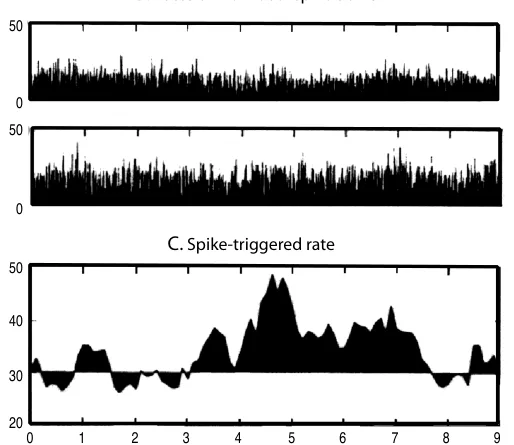
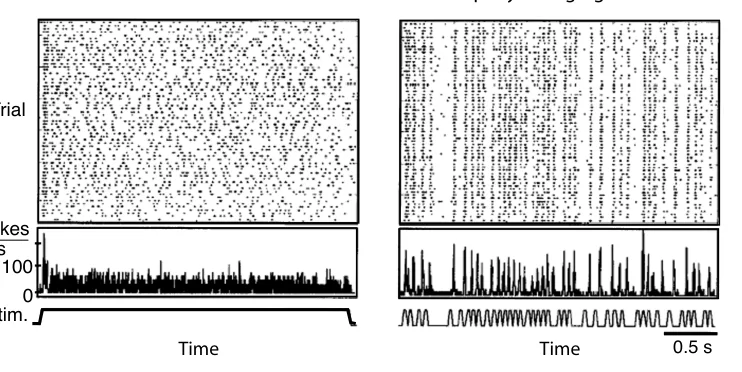

Phần II · Chương 5 — Nơ-ron tích phân–phát xung và mô hình quần thể
5 Neuron tích phân-và-phóng xung và các mô hình quần thể
Tuân theo cách tiếp cận tối giản trong mô hình hóa, chương này giới thiệu một loạt các mức độ trừu tượng hóa tiếp theo của neuron. Chúng ta bắt đầu bằng việc thảo luận về neuron tích phân-và-phóng xung có rò rỉ (leaky integrate-and-fire – LIF) vô cùng quan trọng. Mặc dù mô hình này nhìn chung khá phức tạp, nhưng tính đơn giản của động lực học dưới ngưỡng cho phép thực hiện một số phép tính thú vị. Chúng ta cũng giới thiệu các tổng quát hóa gần đây hơn của mô hình cơ bản này để cho phép tích hợp trở lại nhiều đặc điểm thực tế hơn của các nhóm neuron cụ thể. Trong phần giữa của chương này, chúng ta thảo luận một số khía cạnh tổng quát về xử lý thông tin bằng các neuron phóng xung, điều này sẽ tạo tiền đề cho mức độ trừu tượng hóa cuối cùng của chúng ta đối với các hệ thống thần kinh. Đó là, chúng ta thực hiện một bước nhảy vọt quan trọng khác để mô tả hành vi tập thể của các nhóm neuron, còn được gọi là mô hình quần thể (population models) hoặc mô hình tốc độ (rate models). Các nút quần thể là cơ sở cho nhiều nghiên cứu ở cấp độ hệ thống trong khoa học thần kinh nhận thức và được sử dụng thường xuyên trong các phần sau của cuốn sách này. Chương này là một khởi đầu quan trọng của các phép trừu tượng hóa cần thiết để giải quyết các nguyên lý xử lý thông tin ở cấp độ hệ thống.
5.1 Các mô hình tích phân-và-phóng xung có rò rỉ
Nhiều nghiên cứu tính toán trong tài liệu khoa học dựa trên các phiên bản đơn giản hóa mạnh mẽ của các cơ chế hiện diện trong neuron thực hoặc thậm chí của các mô hình dựa trên độ dẫn. Có nhiều lý do cho những sự đơn giản hóa như vậy. Thường thì sự đơn giản hóa là cần thiết để giúp các phép tính với số lượng lớn neuron trở nên khả thi. Sự đơn giản hóa cũng hữu ích về mặt khoa học nhằm làm nổi bật các đặc điểm tối thiểu cần thiết để tạo ra một số tính chất nổi trội nhất định trong các mạng lưới. Tất nhiên, một phần quan trọng của mọi nghiên cứu nghiêm túc là phải xác minh rằng các giả định đơn giản hóa là phù hợp trong bối cảnh của câu hỏi cụ thể cần phân tích thông qua mô hình. Ngoài ra, một động lực mạnh mẽ cho các mô hình sau đây là hình dạng của các xung điện thế do neuron tạo ra rất đồng nhất (rập khuôn), và do đó khó có khả năng các chi tiết chính xác về hình dạng xung lại đóng vai trò quyết định đối với việc truyền thông tin trong hệ thần kinh ở cấp độ được thảo luận trong cuốn sách này. Ngược lại, thời điểm xuất hiện xung chắc chắn có ảnh hưởng nhất định đến quá trình xử lý của các phần tử phóng xung trong mạng lưới mà chúng ta sẽ khám phá sâu hơn bên dưới. Vì vậy, đối với các câu hỏi mà chúng ta sắp đặt ra, việc mô tả hình dạng chính xác của một xung không quan trọng bằng việc tích hợp đầu vào synap dẫn đến sự phát sinh xung và quá trình phục hồi sau xung. Do đó, chúng ta bỏ qua động lực học chi tiết của kênh ion và thay vào đó tập trung vào việc xấp xỉ sự tích hợp động lực học của đầu vào synap, thời điểm phóng xung và việc đặt lại (reset) sau các xung.
Tác động chính của các kênh natri và kênh rò rỉ, vốn quan trọng trong pha tăng của một xung điện thế, là chúng đẩy điện thế neuron lên mức cao hơn khi có đầu vào và để điện thế suy giảm về điện thế nghỉ trong trường hợp ngược lại. Nếu bỏ qua các tính phi tuyến được nắm bắt
Fundamentals of Computational Neuroscience. Third edition. Thomas P. Trappenberg, Oxford University Press. © Oxford University Press 2023. DOI:10.1093/oso/9780192869364.003.0005 bởi sự phụ thuộc điện thế phi tuyến của các kênh natri, chúng ta có thể xấp xỉ động lực học dưới ngưỡng của điện thế màng bằng một phương trình vi phân tuyến tính đơn giản theo định luật Kirchoff (xem các phương trình 4.20 và 4.2), dv(t)
dt = −(v(t) −EL) + RI(t), (5.1)
τm trong đó EL là điện thế nghỉ. Một hệ thống như vậy còn được gọi là bộ tích phân có rò rỉ (leaky integrator). Chúng ta đã đưa vào một hằng số thời gian τm được xác định chủ yếu bởi điện dung của mô hình một khoang và độ dẫn trung bình của các kênh natri và kênh rò rỉ. Dòng điện đầu vào I(t) có thể có nhiều nguồn khác nhau, chẳng hạn như dòng điện được cấp nhân tạo trong các thiết lập thực nghiệm hoặc đầu vào synap. Chúng ta sẽ chỉ rõ điều này sau cho các mô hình cụ thể.
Trong khi sự tích tụ dưới ngưỡng của điện thế màng được mô hình hóa khá chi tiết, một sự đơn giản hóa lớn được thực hiện ngay khi điện thế màng đủ lớn để kích hoạt một điện thế hoạt động. Tại thời điểm này, ở Chương 4 chúng ta đã sử dụng bộ phương trình Hodgkin–Huxley đầy đủ để mô hình hóa hình dạng của xung. Tuy nhiên, bây giờ chúng ta chỉ quan tâm đến thực tế là một xung đã được tạo ra tại thời điểm tf khi ngưỡng θ đạt được. Về mặt toán học, chúng ta có thể viết điều này là v(tf) = θ. (5.2)
Giả định rằng có một ngưỡng cố định chỉ là một phép xấp xỉ thô của quá trình phát sinh xung thực tế. Các phương trình Hodgkin–Huxley đã chỉ ra rằng giá trị không thể quay lại (value of no return) — tức lượng tích tụ mà từ đó không thể ngăn chặn việc phóng xung bằng cách tắt kích thích — phụ thuộc vào hình dạng (hoặc độ cong) của quá trình tích tụ dòng điện. Ngoài ra, một số neuron vỏ não in vivo thể hiện sự biến thiên mạnh mẽ của ngưỡng này cũng như các biến thiên khác vốn bị bỏ qua ở đây.
Để hoàn thiện mô hình, chúng ta cũng phải đặt lại điện thế màng sau khi một neuron đã phóng xung. Nhiều cơ chế có thể được xem xét ở đây và sẽ được khám phá sâu hơn bên dưới. Một lựa chọn đặc biệt đơn giản là đặt lại điện thế màng về một giá trị cố định vres ngay sau một xung, ví dụ, v(tf + δ) = vres, (5.3)
trong đó δ là một bước thời gian nhỏ vô cùng trong dạng liên tục, hoặc một bước thời gian hữu hạn trong các phiên bản rời rạc, như được sử dụng trong các mô phỏng số. Chúng ta có thể tích hợp thời gian trơ tuyệt đối bằng cách giữ cho điện thế màng không đổi, v = vres, trong một khoảng thời gian nhất định sau xung. Một tính trơ tiệm tiến hơn có thể được mô phỏng bằng một mô tả hàm mượt mà hơn thay vì sự đặt lại đột ngột của điện thế màng, nhưng hầu hết các mô phỏng được thảo luận trong cuốn sách này sẽ không phụ thuộc cốt yếu vào những chi tiết này. Các phương trình 5.1–5.3 định nghĩa neuron tích phân-và-phóng xung (có rò rỉ), mặc dù một tên gọi chính xác hơn có lẽ là neuron tích phân-phóng xung-và-đặt lại có rò rỉ. Nó cũng thường được viết tắt là neuron LIF hoặc neuron IF. Một neuron mô hình như vậy được minh họa sơ đồ trong Hình 5.1.
Mặc dù dạng của neuron IF được trình bày ở đây khá tổng quát, mô hình neuron này thường được sử dụng kết hợp với các dòng điện đầu vào cụ thể cho các nghiên cứu mô hình hóa cụ thể. Ví dụ, chúng ta có thể coi dòng điện này được cung cấp từ bên ngoài trong các thí nghiệm hoặc chúng ta có thể mô tả dòng điện được tạo ra từ các α1 w1 w2 w3 α2
Σ
α3 wn αn
Hình 5.1 Minh họa sơ đồ của một neuron tích phân-và-phóng xung có rò rỉ. Mô hình neuron này tích hợp (tính tổng) đầu vào bên ngoài, với mỗi kênh được nhân trọng số với các hệ số trọng số synap tương ứng wi, và tạo ra một xung đầu ra nếu điện thế màng đạt đến ngưỡng phóng xung.
quá trình chuyên biệt của các tế bào cảm giác. Trong nhiều mô phỏng mạng lưới, chúng ta chủ yếu quan tâm đến tổng các dòng điện synap được tạo ra bởi sự phóng xung của các tế bào tiền synap. Tổng các dòng điện synap này phụ thuộc vào hiệu lực của từng synap riêng lẻ, được mô tả bằng một giá trị cường độ synap, wj, cho mỗi synap, được gắn nhãn bằng chỉ số j đại diện cho mỗi neuron tiền synap. Chúng ta cũng gọi giá trị này là cường độ kết nối, hiệu lực synap, hoặc đơn giản là giá trị trọng số. Sau đây, chúng ta giả sử rằng không có sự tương tác giữa các synap để có thể viết tổng dòng điện đầu vào của neuron đang xét dưới dạng tổng của từng dòng điện synap riêng lẻ, trong đó mỗi đáp ứng hậu synap đối với một sự kiện tiền synap, được viết dưới dạng hàm α mà chúng ta đã thảo luận trong Mục 4.2.3, được nhân với một giá trị trọng số (hiệu quả synap)
X
X
wjα(t −tf
I(t) =
j). (5.4)
j tf j
Biến tf
j ký hiệu thời điểm phóng xung của neuron tiền synap của synap j, trái ngược với thời điểm phóng xung của neuron hậu synap ở trên vốn không có chỉ số. Do đó, chúng ta đã tham số hóa diễn biến theo thời gian của đáp ứng synap bằng hàm α(t) như được sử dụng trong phương trình 4.1. Ngoài ra, chúng ta có thể sử dụng mô hình synap dựa trên độ dẫn như trong các phương trình 4.4–4.5. Sự đơn giản hóa chính của các neuron IF là quá trình phát sinh xung được thay thế đơn giản bằng một ghi nhận rằng một xung đã xảy ra và một sự đặt lại điện thế.
5.1.1 Đáp ứng của các neuron IF đối với các dòng điện đầu vào rất ngắn và không đổi
Tầm quan trọng và tính đơn giản mang tính minh họa của mô hình LIF cho phép suy diễn chi tiết hơn về một số hành vi của nó. Toàn bộ hệ phương trình mô tả một neuron IF là phi tuyến do sự đặt lại điện thế màng sau mỗi xung, và thường phải được tích phân bằng phương pháp số. Tuy nhiên, phương trình động lực học cho điện thế màng dưới ngưỡng dẫn đến một xung, phương trình 5.1, về mặt toán học là một phương trình vi phân tuyến tính không thuần nhất có thể giải được bằng giải tích. Để đơn giản hóa các phương trình sau đây, chúng ta sẽ đặt EL = 0 sao cho điện thế màng v được đo tương đối so với điện thế nghỉ này. Chúng ta thảo luận các nghiệm trong mục này cho một số trường hợp mang tính hướng dẫn.
Chúng ta bắt đầu với trường hợp một neuron IF được kích thích bởi một xung đầu vào rất ngắn, một dòng điện đầu vào rất ngắn I(t) không đủ để gây ra một xung điện thế. Về mặt toán học, chúng ta viết xung đầu vào ngắn này dưới dạng hàm delta I(t) = δ(t) như đã đề cập trong Chương 3.3. Khó có thể tưởng tượng dạng này tồn tại trong tự nhiên; điều đó có nghĩa là có một xung đầu vào mạnh vô hạn nhưng có thời lượng bằng không. Tuy nhiên, có thể định nghĩa hàm delta một cách chặt chẽ như một quá trình giới hạn của một xung hữu hạn, ví dụ, như một đường cong hình chuông Gaussian, và làm cho thời lượng nhỏ dần trong khi giữ nguyên tích phân trên hàm này. Với quá trình giới hạn này, chúng ta có thể giải phương trình vi phân 5.1.. Giả sử chúng ta bắt đầu ở tình huống mà điện thế ban đầu ngay trước thời điểm t = 0 bằng không. Sau đó chúng ta áp dụng một xung đầu vào rất ngắn đẩy điện thế tại thời điểm t = 0 lên v(t = 0) = 1. Sau đó, không còn dòng điện đầu vào nào nữa, nên phương trình 5.1 trở thành một phương trình vi phân thuần nhất đơn giản cho mọi thời điểm t > 0, được cho bởi dv(t)
τm dt + v(t) = 0. (5.5)
Nghiệm của phương trình vi phân này là một hàm mũ có thể dễ dàng kiểm chứng bằng cách thế kết quả vào phương trình vi phân. Điện thế màng suy giảm theo hàm mũ sau khi một dòng điện bên ngoài ngắn được áp dụng, v(t) = e−t/τm. (5.6)
Thang thời gian của sự suy giảm này được cho bởi hằng số thời gian τm.
Một ví dụ khác mà chúng ta có thể tích phân các phương trình động lực học dưới ngưỡng là một neuron IF được kích thích bởi một dòng điện đầu vào không đổi đủ thấp để ngăn việc phóng xung. Điều này sẽ dẫn đến, sau một khoảng thời gian quá độ, một trạng thái dừng trong đó điện thế màng sẽ không thay đổi nữa vì dòng điện đầu vào không còn thay đổi. Khi điện thế màng không thay đổi, ta có dv dt = 0. (5.7)
Thế điều này vào phương trình 5.1 cho ta điện thế cân bằng ở thời gian lớn được cho bởi v = RI. (5.8)
Chúng ta đã chọn điều kiện trong đó dòng điện đầu vào đủ nhỏ để không gây ra xung. Điều kiện này giờ đây có thể được chỉ rõ hơn là RI < θ. Chúng ta mới chỉ tính nghiệm cân bằng của điện thế màng sau khi một dòng điện không đổi được áp dụng trong một thời gian dài. Phương trình vi phân cho đầu vào không đổi cũng có thể được giải cho mọi thời điểm sau khi dòng điện không đổi Iext = const được áp dụng, như trong v(t) = RI(1 −e−t/τm + v(t = 0)
RI e−t/τm), (5.9)
điều này có thể được kiểm chứng bằng cách thế nghiệm này vào phương trình vi phân. Nghiệm này có hai phần: số hạng cuối mô tả sự suy giảm theo hàm mũ của điện thế tại v(t = 0) như trước đây, và số hạng đầu mô tả sự tăng lên của điện thế màng do dòng điện đầu vào. Nghiệm này được minh họa trong Hình 5.2A. Neuron không phóng xung trong trường hợp này vì chúng ta đã sử dụng một dòng điện đầu vào tương đối nhỏ so với ngưỡng phóng xung của neuron, RI < θ. Ngược lại, nếu dòng điện bên ngoài trung bình lớn hơn ngưỡng, RI > θ, thì neuron phóng xung đều đặn với một khoảng thời gian không đổi giữa các xung, gọi là khoảng cách giữa các xung (interspike interval). Điều này được thể hiện trong Hình 5.2B từ các mô phỏng bằng chương trình mô phỏng LIF.py.
Xung
Xung
55
55 v [mV]
v [mV]
60
60
65
65
0 200 400 600 800 1000 Thời gian [ms]
0 200 400 600 800 1000 Thời gian [ms]
Hình 5.2 Các chuỗi xung và điện thế màng được mô phỏng của một neuron tích phân-và-phóng xung có rò rỉ. Ngưỡng được đặt ở θ = 10 mV và được biểu thị bằng đường nét đứt. (A) Đầu vào không đổi với cường độ RIext = 8 mV, quá nhỏ để gây ra xung. (B) Đầu vào không đổi có cường độ RIext = 12 mV, đủ mạnh để gây ra các xung theo những khoảng thời gian đều đặn. Lưu ý rằng chúng ta không đưa hình dạng của bản thân xung vào trong hình mà chỉ đặt lại điện thế màng đồng thời biểu thị rằng một xung đã xảy ra bằng cách vẽ một dấu chấm ở hình phía trên.
Programs/LIF.py 1 # Simulation of ( leaky ) i n t e g r a t e −and−f i r e neuron 2 import numpy as np 3 import m a t p l o t l i b . pyplot as p l t 4 5 # parameters of the model 6 dt =0.1 # i n t e g r a t i o n time s t e p [ms] 7 tau =10 # time c o n s t a n t [ms] 8 E L=−65 # r e s t i n g p o t e n t i a l [mV] 9 t h e t a =−55 # f i r i n g t h r e s h o l d [mV] 10 RI ext =8 # c o n s t a n t e x t e r n a l i n p u t [mA/Ohm] 11 12 # I n t e g r a t i o n with Euler method 13 v r e c =np . a r r a y ( [ ] ) 14 t r e c =np . a r r a y ( [ ] ) 15 s r e c =np . a r r a y ( [ ] ) 16 t s t e p =0; v=E L 17 f o r t in range ( i n t (100/ dt ) ) : 18 s=v>t h e t a 19 v=s∗E L+(1−s ) ∗( v−dt / tau ∗( ( v−E L)−RI ext ) ) 20 v r e c =np . append ( v rec , v ) 21 t r e c =np . append ( t r e c , t ) 22 s r e c =np . append ( s rec , s ) 23 24 # P l o t t i n g r e s u l t s 25 ax1 = p l t . axes ( [ 0 . 2 , 0. 7 , 0.7 , 0 . 2 ] ) 26 ax1 . p l o t ( t r e c , s rec , ’ . ’ , markersize =20) 27 ax1 . a x i s ( [ 0 , 100/ dt , 0 .5 , 1 . 5 ] ) 28 p l t . x t i c k s ( [ ] , [ ] ) ; p l t . y t i c k s ( [ ] , [ ] ) 29 p l t . y l a b e l ( ’ Spikes ’ ) 30 31 ax2 = p l t . axes ( [ 0 . 2 , 0. 2 , 0.7 , 0 . 5 ] ) 32 ax2 . p l o t ( t r e c , v r e c ) 33 ax2 . p l o t ( [ 0 , 100/ dt ] ,[ −55 , −55], ’−−’ ) ; 34 ax2 . a x i s ( [ 0 , 100/ dt , −66, −53]) 35 p l t . x l a b e l ( ’Time [ms] ’ ) ; p l t . y l a b e l ( ’v [mV] ’ )
5.1.2 Hàm khuếch đại tốc độ
Chúng ta có thể tính thời gian một neuron IF cần để một dòng điện đầu vào không đổi đạt tới ngưỡng, được gọi là thời gian vượt ngưỡng lần đầu (first passage time), từ nghiệm trong phương trình 5.9. Chúng ta có thể chọn thang thời gian sao cho xung cuối cùng xảy ra tại t = 0, đây cũng là thời điểm mà điện thế màng được đặt lại, v(t = 0) = vres. Thời gian vượt ngưỡng lần đầu, tf, khi đó được cho bởi thời điểm khi điện thế màng đạt đến ngưỡng phóng xung, v(tf) = θ. Điều này được tính từ phương trình 5.9 là tf = −τm ln θ −RI vres −RI , (5.10)
trong đó ln là logarit tự nhiên (logaritmus naturalis), là hàm ngược của hàm mũ. Nghịch đảo của thời gian vượt ngưỡng lần đầu xác định tốc độ phóng xung,
¯r = (tref −τm ln θ −RI vres −RI )−1, (5.11)
trong đó chúng ta đã đưa vào một thời gian trơ tuyệt đối tref. Hàm này là hàm kích hoạt của một neuron IF, được minh họa trong Hình 5.3 đối với một vài giá trị của điện thế đặt lại, vres, và thời gian trơ tuyệt đối, tref. Hàm này nhanh chóng đạt đến hành vi tuyến tính tiệm cận sau một khởi phát nhanh với các dòng điện bên ngoài vượt quá giá trị ngưỡng. Một hàm tuyến tính theo ngưỡng (threshold-linear function) thường được sử dụng để xấp xỉ hàm kích hoạt của các neuron IF.
0.25 v res = 0; t ref = 0
Tốc độ phóng xung trung bình [τ -1]
0.2 m vres= 5
0.15 t ref = 1
0.1 tref = 5
0.05
0 5 10 15 20 25 30 0
RI ext
Hình 5.3 Hàm kích hoạt của một neuron tích phân-và-phóng xung có rò rỉ đối với một vài giá trị của điện thế đặt lại vres và thời gian trơ tref. Tốc độ phóng xung được cho theo đơn vị nghịch đảo của hằng số thời gian. Neuron chỉ phóng xung khi đầu vào đủ mạnh để điện thế màng đạt đến ngưỡng (RIext = 10 trong trường hợp này). Tốc độ phóng xung trung bình tăng đối với các điện thế đặt lại lớn hơn và thời gian trơ ngắn hơn.
Hàm kích hoạt của một neuron có thể được đo bằng thực nghiệm, tương tự như các mô phỏng bằng cách áp dụng các dòng điện bên ngoài không đổi có độ lớn khác nhau lên một neuron cô lập trong đĩa Petri. Các bản ghi in vitro như vậy có thể được sử dụng để kiểm tra các tham số thần kinh chính mà chúng ta cần hiểu cho các mô phỏng trung thực về mặt sinh học. Tuy nhiên, chúng ta đã thấy rằng các hàm kích hoạt như vậy cũng phụ thuộc vào nhiễu trong hệ thống, như đã được minh họa cho một neuron Hodgkin–Huxley trong Hình 4.10. Bây giờ chúng ta sẽ thảo luận về một số mô hình nhiễu có thể được sử dụng để hiệu chỉnh hàm kích hoạt này.
5.1.3 Mô hình đáp ứng xung ⋄
Trong mục trước, chúng ta đã tích phân phương trình mô tả các neuron IF đơn giản với các dòng điện không đổi kích thích neuron, và chúng ta đã tính toán các đáp ứng của neuron đối với các xung dòng điện rất ngắn. Khi nghĩ về việc truyền thông tin trong các neuron, chúng ta quan tâm nhiều hơn đến các dòng điện đầu vào biến thiên theo thời gian, chẳng hạn như các dòng được tạo ra bởi các chuỗi xung tiền synap. Chúng ta có thể tích phân một cách hình thức phương trình vi phân động lực học 5.1 cho bất kỳ đầu vào phụ thuộc thời gian nào. Để chứng minh điều này, chúng ta sử dụng các kết quả trước đó cho thấy đáp ứng của neuron đối với các xung dòng điện bên ngoài rất ngắn. Ý tưởng của lời giải là biểu diễn một dòng điện bên ngoài tùy ý I(t) như một tập hợp gồm nhiều xung rất ngắn được điều biến bởi cường độ của tín hiệu đầu vào tại thời điểm cụ thể đó. Đáp ứng đối với mỗi xung dòng điện là một hàm mũ, như chúng ta đã thấy trước đây. Do đó, nghiệm tổng quát có thể được biểu diễn dưới dạng tổng trên tất cả các đáp ứng hàm mũ đối với các xung dòng điện rất ngắn. Tổng này thực chất là một tích phân vì chúng ta có một số hạng cho mỗi bước thời gian nhỏ vô cùng. Diễn biến theo thời gian của một neuron IF để đáp ứng với một dòng điện đầu vào tùy ý I(t) có thể được viết dưới dạng một phương trình tích phân,
Z ∞
0 e−s/τmI(t −s)ds. (5.12)
v(t) = R
Biến tích phân s đại diện cho tất cả các thời điểm đứng trước thời điểm t, và các xung dòng điện tại những thời điểm như vậy ảnh hưởng đến điện thế màng tại thời điểm t một lượng phụ thuộc theo hàm mũ vào khoảng cách thời gian s. Điều này có nghĩa là các xung gần đây hơn có ảnh hưởng đến điện thế màng lớn hơn so với các xung ở xa hơn.
Dòng điện đầu vào I(t) có thể được tạo ra bằng các điện cực xuyên qua một neuron, và chúng ta có thể áp dụng các dạng khác nhau của dòng điện này để nghiên cứu đáp ứng của neuron. Sau đây là phác thảo các phương trình dành riêng cho trường hợp thú vị của các đầu vào synap được tạo ra bởi sự phóng xung tiền synap. Chúng ta cần tính đến các cơ chế đặt lại trong các neuron IF, vốn đã bị bỏ qua trong phương trình 5.12. Chúng ta sẽ tính đến đáp ứng trong điện thế màng sau một xung tiền synap và sự thay đổi trong điện thế màng sau một xung hậu synap bằng cách sử dụng hai số hạng riêng biệt, được ký hiệu lần lượt là ϵ và η. Do đó, điện thế màng của mô hình tích phân-và-phóng xung có rò rỉ có thể được biểu diễn dưới dạng tổng của các điện thế riêng lẻ η và ϵ nhờ tính tuyến tính của phương trình vi phân 5.1. Do đó, mô tả về điện thế màng được tách thành các thành phần sau
X
X
X
wjϵ(t −tf, t −tf η(t −tf). (5.13)
v(t) = j) + j tf tf j
Phương trình này bao gồm một tổng trên nhiều số hạng ϵ, mỗi số hạng cho một synap được nhân với giá trị trọng số tương ứng. Những thay đổi trong điện thế màng được mô tả bởi các số hạng ϵ nhìn chung có thể phụ thuộc vào xung hậu synap cuối cùng tại thời điểm tf nếu các kênh ion phụ thuộc vào điện thế. Đặc điểm chính được mã hóa trong số hạng ϵ này là ảnh hưởng của điện thế màng hậu synap lên lịch sử phóng xung của từng xung tiền synap tf j, như được xác định bởi phương trình 5.12. Chúng ta có thể đưa vào số hạng này dạng cụ thể của dòng điện đầu vào được tạo ra bởi một sự kiện synap mà chúng ta đã tham số hóa bằng hàm α trong Chương 4. Điều này có thể được viết là
Z ∞
0 e−s/τmα(t −tf
ϵ(t −tf j −s)ds, (5.14)
j) = R cho một đầu vào synap tại synap j.
Số hạng thứ hai trong phương trình 5.13 (số hạng η) mô tả sự đặt lại điện thế màng sau khi một xung hậu synap đã xảy ra. Chúng ta có thể viết điều này dưới dạng tương tự như biểu thức cho đáp ứng synap, bằng cách đưa vào một dòng điện delta âm ngắn với cường độ của ngưỡng
RIres = −θδ(t −tf). (5.15)
Tích phân 5.12 cho dòng điện đặt lại đặc biệt này được cho bởi η(t −tf) = −θe−(t−tf)/τm. (5.16)
Thời điểm phóng xung tf, được viết không có chỉ số, là thời điểm phóng xung của neuron hậu synap, được cho bởi việc giải phương trình v(tf) = θ, (5.17)
trái ngược với thời điểm phóng xung của neuron tiền synap vốn có chỉ số, tf j. Lưu ý rằng các hàm η và ϵ thường có thể được giải bằng giải tích cho các lựa chọn cụ thể của cơ chế đặt lại và hàm α, tương ứng. Một số ví dụ được tóm tắt trong Bảng 5.1. Dạng tích phân của các neuron IF, được định nghĩa bởi các phương trình 5.17 và 5.13, được gọi là mô hình đáp ứng xung (spike-response model). Chúng ta sẽ sử dụng mô hình này để suy diễn các mô tả về hành vi trung bình của các quần thể neuron ở phần sau của chương này.
5.1.4 Mô hình LIF tổng quát
Neuron tích phân-và-phóng xung có rò rỉ (LIF) nắm bắt được một số thành phần thiết yếu của một neuron đang phóng xung, cụ thể là sự tích hợp dưới ngưỡng của các dòng điện, sự phóng xung của một neuron khi điện thế màng tích tụ đủ, và sự đặt lại điện thế màng sau một xung. Như đã chỉ ra, một số chi tiết của mô hình này bị đơn giản hóa quá mức, và nhiều chi tiết sinh học hơn có thể quan trọng để đưa vào tùy thuộc vào các câu hỏi nghiên cứu cụ thể. Ví dụ, người ta đã đề cập rằng nói một cách chặt chẽ thì không có ngưỡng phóng xung cố định, và sự đặt lại cũng như tính trơ sau xung cũng tinh vi hơn. Một bước tiến quan trọng cho các nhà mô hình hóa tính toán đã được thực hiện tại Viện Khoa học Não bộ Allen (Allen Institute for Brain Science). Các nhà nghiên cứu ở đó đã định nghĩa một loạt các mô hình LIF tổng quát (generalized LIF – GLIF) có hệ thống với các chi tiết được bổ sung.
Việc định nghĩa các mô hình tích phân-và-phóng xung có rò rỉ tổng quát qua đó là một phần của một dự án lớn nhằm mô tả đặc tính của nhiều loại neuron từ vỏ não chuột và người, bao gồm các mô hình dựa trên độ dẫn chi tiết như đã đề cập trong Chương 4.5.3. Từ tất cả các loại tế bào này, họ đã rút ra một loạt năm mô hình với độ phức tạp tăng dần để đưa vào một cách có hệ thống các loại đặc điểm cụ thể của nhiều neuron khác nhau. Những bổ sung này được phác thảo ở đây.
Bảng 5.1 Các ví dụ về hàm đáp ứng xung (cột bên phải) mô tả điện thế màng đáp ứng với các dạng tương ứng của điện thế hậu synap (cột bên trái) được sử dụng trong các mô phỏng và mô hình giải tích. Thời điểm phóng xung của neuron tiền synap là tf, và td là thời lượng của xung α trong ví dụ thứ hai. τ m và τ s là các hằng số thời gian
Điện thế hiệu dụng sau Hàm đáp ứng xung một xung tiền synap đơn lẻ
( 0 với t ≤tf α(t) = δ(t −tf) ϵ(t) =
−(t−tf )
τm với t > tf e
0 với t ≤tf
0 với t ≤tf
−(t−tf )
1 τm với tf < t ≤td τm với tf < t ≤td
1 −e α(t) = ϵ(t) =
−(t−tf −td)
−td
0 với t > td
τm với t > td τm )e (1 −e
0 với t ≤tf
0 với t ≤tf
−(t−tf )
−(t−tf )
α(t) = τs với t > tf ϵ(t) =
−(t−tf )
1 τs e τm −e τs 1−(τs/τm) với t > tf e
Mô hình cơ sở được gọi là LIF1, tương ứng với mô hình mà chúng ta đã thảo luận trong Chương 5.1. Chúng ta tóm tắt lại ở đây với việc thay thế hằng số thời gian bằng τm = RC để phù hợp với ký hiệu của họ:
dv(t)
dt = 1
C (I(t) −1
R(v(t) −EL)) (5.18)
v(tf) = θ (5.19) v(tf + δ) = vres. (5.20)
Phương trình đầu tiên mô tả động lực học dưới ngưỡng, phương trình thứ hai mô tả sự phóng xung khi vượt qua ngưỡng phóng xung, và phương trình thứ ba mô tả sự đặt lại điện thế sau xung.
Mô hình thứ hai, LIF2, bao gồm hiệu ứng rằng ngưỡng phóng xung phụ thuộc vào các lần phóng xung trước đó, được gọi là mô hình ngưỡng được định nghĩa về mặt sinh học (biologically defined threshold model). Mô hình này bao gồm một giá trị ngưỡng bổ sung suy giảm dần θs, kích hoạt một mức tăng ∆θs theo mỗi xung và sau đó suy giảm theo hàm mũ với hằng số suy giảm bs, dθs(t)
dt = −bsθs + ∆δ(t −tf)δδθs (5.21)
v(tf) = θ + θs(t) (5.22) v(tf + δ) = EL + fv(v(t) −EL) + ∆V. (5.23)
Điện thế đặt lại theo đó có thêm hai tham số nữa, fv và ∆v.
Mô hình thứ ba, LIF3, lấy mô hình cơ sở LIF1 và thêm vào các dòng điện sau xung (after-spike currents). Sự bổ sung này nhằm mô phỏng tác động của các kênh ion khác nhau như các kênh natri và kali biến đổi nhanh. Các dòng điện này được cộng thêm với thang thời gian riêng kj, một hằng số nhân Rj, và một hằng số cộng Aj, dIj(t)
dt = −kjIj(t) (5.24)
dv(t)
dt = 1
Ij(t) −1
X
R(v(t) −EL)) (5.25)
C (I(t) +
j
I(tf + δ) = RjIj(t) + Aj (5.26)
Mô hình thứ tư, LTF3, kết hợp ngưỡng được định nghĩa về mặt sinh học với các dòng điện sau xung. Mô hình cuối cùng, LIF5, sau đó thêm vào một hiệu ứng khác của ngưỡng, đó là sự phụ thuộc vào điện thế, dθv(t)
dt = a(v(t) −EL) −bv(θv(t) −θ) (5.27)
v(tf) = θ + θs(t) + θv(t) (5.28) v(tf + δ) = EL + fv(v(t) −EL) + ∆V. (5.29)
Mô hình này đưa vào thêm hai hằng số nữa, cụ thể là a và fv.
Việc định nghĩa các mô hình này không phải là đóng góp duy nhất của Viện Allen. Điều làm cho các mô hình này trở nên rất giá trị cho các nghiên cứu trong tương lai là các nhà sáng tạo cũng đã phát triển một quy trình để khớp các mô hình này với bản ghi của các neuron cụ thể. Bằng cách này, các nhà nghiên cứu đã thiết lập các tham số của mô hình cho các loại neuron cụ thể, điều này sẽ hữu ích cho việc so sánh trực tiếp các mô hình với dữ liệu ghi nhận.
5.1.5 Neuron McCulloch–Pitts
Trước khi rời khỏi phần giới thiệu các neuron phóng xung, cuối cùng chúng ta nên đề cập đến một trong những mô hình neuron lâu đời nhất và đơn giản nhất, được giới thiệu bởi Warren McCulloch và Walter Pitts vào năm 1943. Mô hình này có dạng một đơn vị logic, tính tổng các giá trị đầu vào, xin i , để xác định đầu vào ròng,
X
xin h = i . (5.30)
i
Đơn vị trở nên tích cực (hoạt động) nếu đầu vào ròng lớn hơn một giá trị ngưỡng, θ,
1 nếu h > θ 0 ngược lại . (5.31)
xout =
Nhiều khả năng xử lý thông tin của mạng thần kinh có thể được thảo luận và minh họa bằng các đơn vị McCulloch–Pitts. Trước khi sử dụng mô hình này trong các chương sau, do đó chúng ta nên nói vài lời về cách diễn giải mô hình này. Mặc dù McCulloch và Pitts chắc chắn đã nghĩ đến các neuron, nhưng rõ ràng là mô hình này không nắm bắt được diễn biến chính xác theo thời gian của một điện thế màng. Thay vào đó, mô hình này nên được xem như một mô hình cho các phép toán trong các bước thời gian rời rạc. Mặc dù bước thời gian này về nguyên tắc có thể rất nhỏ để nắm bắt các tín hiệu biến thiên nhanh, nhưng cũng rõ ràng là McCulloch và Pitts đã xem xét các tác vụ tính toán của neuron hơn là việc mô tả các tính chất vật lý của neuron. Do đó, một góc nhìn tốt hơn về thang đo phù hợp của bước thời gian là vài chục mili-giây, và chúng ta có thể diễn giải hoạt động trong bước thời gian này như sự xuất hiện của một hoặc nhiều xung trong khoảng thời gian này. Nếu chúng ta muốn tính đến các số lượng xung khác nhau trong một bước thời gian như vậy, thì chúng ta có thể muốn thay đổi hàm kích hoạt (phương trình 5.31) để cho phép đầu ra có tính chất tiệm tiến (phân cấp) hơn. Đầu ra khi đó sẽ đại diện cho giá trị trung bình theo thời gian của số lượng xung.
Việc sử dụng phép lấy trung bình theo thời gian bởi não bộ đã từng bị đặt dấu hỏi, vì các đáp ứng khi đó sẽ dài hơn nhiều so với những gì quan sát được trong thực nghiệm. Tuy nhiên, chúng ta có thể tiến thêm một bước nữa trong phép trừu tượng hóa của mình và coi đơn vị logic của McCulloch và Pitts là sự phản ánh của một quần thể các neuron kết nối chức năng sẽ trở nên tích cực để đáp ứng với một đầu vào cụ thể. Sự kích hoạt của quần thể này khi đó phản ánh sự hiện diện của các mẫu đầu vào nhất định, và chúng ta có thể hình dung rằng từng neuron riêng lẻ có thể đóng góp vào một số quần thể, như đã được Donald Hebb hình dung cho các tập hợp tế bào (cell assemblies) của ông. Cách tiếp cận quần thể là một đóng góp quan trọng cho việc mô hình hóa não bộ. Các mô hình như vậy được giới thiệu chính thức trong Mục 5.5, và khả năng tính toán của các đơn vị logic như vậy được khám phá trong Chương 7. Mặc dù cách diễn giải của neuron McCulloch–Pitts không phải lúc nào cũng rõ ràng, điều này không nên làm giảm đi tầm quan trọng của mô hình này trong việc làm sáng tỏ các nguyên lý tính toán trong quá trình xử lý của não bộ, bao gồm cả việc xử lý xung trong một mô hình thời gian rời rạc.
5.2 Biến thiên thời điểm phóng xung ⋄
5.2.1 Các bất thường sinh học
Các neuron trong não không phóng xung một cách đều đặn, thay vào đó, chúng có vẻ cực kỳ nhiễu. Các neuron tương đối ít hoạt động phát ra các xung với tần số thấp và rất không đều đặn. Ngoài ra, các đáp ứng tần số cao đối với các kích thích liên quan cũng thường không đều đặn lắm. Các bản ghi đơn bào truyền qua loa nghe rất giống tiếng tích tắc không đều của máy đếm Geiger khi tiếp xúc với vật liệu phóng xạ. Một biểu đồ tần suất (histogram) của các khoảng cách giữa các xung của một tế bào vỏ não được hiển thị trong Hình 5.4A. Tế bào vỏ não trước trán này phóng xung khoảng 15 xung/giây mà không có một mẫu hình liên quan đến tác vụ nào đáng chú ý. Phân bố khoảng cách giữa các xung cho thấy sự biến thiên lớn. Do đó, mẫu phóng xung của tế bào vỏ não này không được mô tả tốt bằng các khoảng cách giữa các xung không đổi do các neuron IF đơn giản được nghiên cứu trong Mục 3.1 tạo ra. Một thước đo thuận tiện cho sự biến thiên của các chuỗi xung là hệ số biến thiên (coefficient of variation), được định nghĩa bằng tỷ số giữa độ lệch chuẩn σ và giá trị trung bình µ,
CV = σ
µ. (5.32)
Giá trị này là CV ≈1.09 đối với dữ liệu tế bào được hiển thị trong Hình 5.4A. Các bản ghi trong não thường cho thấy giá trị biến thiên cao như CV ≈0.5–1 đối với các neuron phóng xung đều đặn
0.16
0.16
CV =1.09
0.14
0.14
C =0.97 V
0.12
0.12
P (ISI)
0.1
P (ISI)
0.1
0.08
0.08
0.06
0.06
0.04
0.04
0.02
0.02
0 50 100 150 200 250 300 0
0 50 100 150 200 250 300 0
ISI [ms]
ISI [ms]
Hình 5.4 Các biểu đồ tần suất chuẩn hóa của khoảng cách giữa các xung (ISI). (A) Dữ liệu từ bản ghi của một tế bào vỏ não (vùng 46 của Brodmann) phóng xung không có đặc điểm liên quan đến tác vụ với tốc độ phóng xung trung bình khoảng 15 xung/giây. Hệ số biến thiên của chuỗi xung là CV ≈1.09 [dữ liệu do Stefan Everling cung cấp]. (B) Dữ liệu mô phỏng từ một chuỗi xung phân bố Poisson trong đó có tính đến một thời gian trơ Gaussian. Đường nét liền biểu diễn hàm mật độ xác suất của phân bố mũ khi được chia tỷ lệ để khớp với biểu đồ tần suất chuẩn hóa của chuỗi xung. Lưu ý rằng sự sai lệch đối với các khoảng cách giữa các xung nhỏ là do việc đưa vào thời gian trơ.
trong vỏ não thị giác sơ cấp (V1) và thùy thái dương giữa (MT), như đã được Softky và Koch (1993) chỉ ra. Sự phóng xung đều đặn của một neuron IF có giá trị không nhất quán là CV = 0.
Phân bố khoảng cách giữa các xung được hiển thị trong Hình 5.4A cho thấy một đuôi suy giảm theo hàm mũ sau một sự khởi phát nhanh được xác định bởi giai đoạn trơ. Phân bố mũ, hay chính thức hơn là hàm mật độ xác suất của phân bố này, được cho bởi pdfexponential(x; λ)(x) = λe−λx, (5.33)
chỉ có một tham số, λ = 1/b, trong đó b bằng giá trị trung bình, và đồng thời là độ lệch chuẩn của một biến ngẫu nhiên phân bố mũ. Do đó, hệ số biến thiên của phân bố mũ là CV = 1. Số lượng sự kiện, khi thời gian giữa các sự kiện tuân theo phân bố mũ, được cho bởi phân bố Poisson, x X λi e−λ pdfPoisson(x; λ)(x) = i! , (5.34)
i=1 và các chuỗi xung trong các nghiên cứu tính toán thường được tạo ra bằng một quá trình Poisson. Quá trình Poisson là một quá trình tạo ra một biến phân bố theo Poisson. Một đặc điểm quan trọng của quá trình Poisson là không có ký ức về các sự kiện trong quá khứ. Nghĩa là, tại bất kỳ thời điểm nào cũng có khả năng như nhau để xung tiếp theo xảy ra. Tất nhiên, điều này không đúng trong thời gian trơ, vốn giải thích cho sự suy giảm số lượng các khoảng cách giữa các xung nhỏ. Phân bố mũ được hiển thị trong Hình 5.4B, cùng với một mô phỏng tương ứng của quá trình Poisson hiệu chỉnh được mô tả chi tiết hơn bên dưới.
Việc mô hình hóa theo hướng thực nghiệm (heuristic) các chuỗi xung được thảo luận cho đến nay không mô tả các quá trình tạo ra nhiễu. Ngoài ra, có một số yếu tố khác mà chúng ta cần tính đến, bao gồm sự ức chế trong mạng lưới và các yếu tố đóng góp khác từ những bất thường trong hệ thống sinh học. Trước hết, đầu vào của hệ thống, chẳng hạn như đầu vào cảm giác từ môi trường, không cố định như được giả định trong các mô phỏng ở trên. Hơn nữa, ở cấp độ đơn bào, chúng ta kỳ vọng nhiều bất thường về cấu trúc sẽ góp phần vào hành vi không đều đặn của các neuron. Chúng bao gồm sự khuếch tán của các chất dẫn truyền thần kinh qua khe synap, sự đóng và mở của các kênh ion, sự lan truyền điện thế màng dọc theo các sợi nhánh có hình học thay đổi, bản chất của các quá trình sinh hóa, và bản chất xác suất của việc giải phóng chất dẫn truyền bởi các xung sợi trục. Việc cố gắng mô tả chi tiết bản chất của những bất thường này nằm ngoài phạm vi của cuốn sách này và nằm ngoài phạm vi của hầu hết các mô hình trong khoa học thần kinh tính toán. Thay vào đó, chúng ta thường gộp tổng hòa của tất cả những bất thường này vào các mô hình của mình bằng cách đưa nhiễu vào các mô phỏng.
5.2.2 Các mô hình nhiễu cho neuron IF
Làm thế nào chúng ta có thể đưa nhiễu vào các mô hình neuron để mô tả một số quá trình ngẫu nhiên trong các đáp ứng thần kinh? Để đơn giản, chúng ta sẽ thảo luận điều này cho mô hình IF, mặc dù các quy trình tương tự có thể được áp dụng cho các mô hình khác. Chúng ta muốn xác định thời điểm phóng xung ngẫu nhiên của các neuron. Để làm được điều đó, chúng ta có thể sử dụng ba phương pháp chính nhằm đưa một thành phần ngẫu nhiên vào mô hình IF. Các phương pháp này được minh họa trong Hình 5.5.
Các mô hình nhiễu thường được sử dụng cho các neuron IF có thể được tóm tắt như sau:
1. Ngưỡng ngẫu nhiên (Stochastic threshold): Chúng ta có thể thay thế ngưỡng, mà điện thế màng phải vượt qua để tạo ra một xung, bằng một ngưỡng có nhiễu θ →θ + η(1)(t). (5.35)
2. Đặt lại ngẫu nhiên (Random reset): Chúng ta có thể đặt lại điện thế màng về một điện thế đặt lại ngẫu nhiên vres →ures + η(2)(t). (5.36)
3. Tích hợp có nhiễu (Noisy integration): Các cơ chế tích hợp trong neuron có thể có nhiễu sao cho bộ tích phân có rò rỉ của các neuron IF có thể được mô tả tốt hơn bằng một phương trình vi phân ngẫu nhiên (điều này tương đương với việc nói rằng bộ tích phân không có nhiễu nhưng nó tích hợp các đầu vào có nhiễu)
dv dt = −v + RIext + η(3)(t). (5.37)
τm
Với các lựa chọn phù hợp cho hàm phân bố của các biến ngẫu nhiên η(1), η(2), và η(3), chúng ta có thể tạo ra các kết quả tương đương cho các quá trình ngẫu nhiên của một neuron, mặc dù cùng một phân bố xác suất cho mỗi biến ngẫu nhiên có thể tạo ra các kết quả khác nhau đối với từng mô hình nhiễu. Trong thực tế, chúng ta muốn chọn các phân bố phù hợp để nắm bắt dữ liệu thực nghiệm, vì vậy việc chọn mô hình nhiễu nào chủ yếu là vấn đề thuận tiện. Đối với các xử lý giải tích, việc sử dụng mô hình ngưỡng ngẫu nhiên thường thuận tiện nhất. Mặc dù có rất ít bằng chứng cho thấy ngưỡng phóng xung của các neuron thực thay đổi theo thời gian, mô hình nhiễu này tương đương với các mô hình nhiễu khác, nên việc mô hình hóa các quá trình ngẫu nhiên trong neuron có thể được thực hiện theo
A. Ngưỡng ngẫu nhiên
Điện thế màng
η ϑ tf
Thời gian
B. Đặt lại ngẫu nhiên
Điện thế màng
ϑ η tf
Thời gian
C. Tích hợp có nhiễu
Điện thế màng
ϑ η tf
Thời gian
Hình 5.5 Ba mô hình nhiễu khác nhau của các neuron tích phân-và-phóng xung. (A) Ngưỡng ngẫu nhiên, (B) đặt lại ngẫu nhiên, và (C) tích hợp có nhiễu. tf là thời điểm phóng xung, θ là ngưỡng phóng xung, và η là một biến ngẫu nhiên [phỏng theo W. Gerstner, trong Pulsed neural networks, Maass và Bishop (chủ biên), MIT Press (1998)].
cách này. Các nghiên cứu số thường xuyên sử dụng đầu vào có nhiễu để mô hình hóa các quá trình ngẫu nhiên trong não. Mô hình này có cách diễn giải đơn giản là sự truyền dẫn synap có nhiễu có thể quan sát được trong các hệ thần kinh thực. Các xử lý giải tích của mô hình này rất khó khăn, mặc dù việc tích hợp nhiễu theo cách này trong các nghiên cứu số lại rất đơn giản, như được trình bày bên dưới.
5.2.3 Mô phỏng sự biến thiên của các neuron thực
Mặc dù việc lựa chọn mô hình nhiễu chủ yếu phụ thuộc vào sự thuận tiện, một câu hỏi quan trọng còn lại là lựa chọn phù hợp cho quá trình ngẫu nhiên, bao gồm phân bố xác suất, và thang thời gian mà trên đó những thăng giáng này có liên quan. Chúng ta không thể đưa ra câu trả lời chung cho những câu hỏi này vì lựa chọn cụ thể phụ thuộc mạnh mẽ vào bản chất của câu hỏi và hệ thần kinh cụ thể đang được nghiên cứu. Các lựa chọn phù hợp phải được thực hiện để khớp với dữ liệu thực nghiệm bất cứ khi nào hình dạng chính xác của các thăng giáng có liên quan. Sau đây, chúng ta chỉ nêu một nét khái quát về tác động của việc đưa nhiễu vào mô hình IF bằng cách xem xét đầu vào có nhiễu (mô hình nhiễu 3). Trong
C = 0.43 V
Hàm mật độ xác suất
0.08
0.06
Phân bố log-chuẩn
0.04
0.02
0 10 20 30 40 50 60 0
Khoảng cách giữa các xung [ms]
Hình 5.6 Phân bố khoảng cách giữa các xung (ISI) được mô phỏng của một neuron IF có rò rỉ với ngưỡng θ = 10 mV và hằng số thời gian τm = 10 ms. Chuỗi xung nền được tạo ra với đầu vào có nhiễu xung quanh giá trị trung bình RI = 12. Các thăng giáng do đó được phân bố theo một phân bố chuẩn tiêu chuẩn. Biểu đồ tần suất ISI thu được được xấp xỉ tốt bằng một phân bố log-chuẩn (đường nét liền). Hệ số biến thiên của chuỗi xung mô phỏng là CV ≈0.43.
ví dụ sau đây chúng ta sử dụng một dòng điện đầu vào phân bố chuẩn được tạo ra bằng cách cộng nhiễu trắng vào một dòng điện đầu vào không đổi,
Iext = ¯Iext + η với η ∈N(0, 1). (5.38)
Các tín hiệu đầu vào phân bố chuẩn là một phép xấp xỉ tốt khi chúng ta xem xét đầu vào synap độc lập từ nhiều neuron có phân bố tương đồng như được phát biểu bởi định lý giới hạn trung tâm (xem Chương 3.5). Phân bố khoảng cách giữa các xung (ISI) của một neuron IF với đầu vào trung bình R¯Iext = 12 mV và ngưỡng θ = 10 mV được hiển thị trong Hình 5.6.
Phân bố này được xấp xỉ tốt bằng một phân bố log-chuẩn (lognormal distribution), pdflognormal(x; µ, σ) = 1 xσ
−(log(x)−µ)2
√
2π e
2σ2 . (5.39)
Một đường khớp dữ liệu với phân bố này được hiển thị dưới dạng đường nét liền trong Hình 5.6. Hệ số biến thiên của dữ liệu này là CV ≈0.43, tiệm cận đầu dưới của sự biến thiên khoảng cách giữa các xung ở vỏ não. Điều này thật đáng chú ý vì chúng ta chỉ xem xét một nguồn nhiễu duy nhất. Ví dụ, chúng ta có thể giả sử nhiễu này bắt nguồn từ các cơ chế tích hợp bên trong có nhiễu của neuron, và sau đó chúng ta có thể xem xét thêm đầu vào có nhiễu từ sự biến thiên trong chính các chuỗi xung đầu vào. Có một số cách khác để tăng sự biến thiên của các xung trong các neuron IF đơn giản, chẳng hạn như sử dụng sự đặt lại một phần và có nhiễu sau khi một xung xảy ra. Điều này làm tăng hiệu quả độ khuếch đại trong mối quan hệ giữa dòng điện đầu vào và tần số xung đầu ra và đã được lập luận là mô tả rất tốt sự biến thiên quan sát được trong các thí nghiệm.
Ví dụ cuối cùng mà chúng ta muốn thảo luận là một neuron IF được kích thích bởi các chuỗi xung tiền synap độc lập với các khoảng cách giữa các xung tuân theo phân bố mũ (các chuỗi xung Poisson). Kết quả từ các mô phỏng như vậy được hiển thị trong Hình 5.7. Ở đó, chúng ta đã lấy làm đầu vào 500 chuỗi xung phân bố Poisson có hiệu chỉnh thời gian trơ như đã thảo luận ở trên. Tốc độ phóng xung trung bình của các neuron đầu vào được đặt ở mức 20 Hz, mức này giảm nhẹ xuống còn
19.3 Hz do thời gian trơ Gaussian với hằng số thời gian 2 ms. Chúng ta chỉ tính đến 500 chuỗi xung tiền synap độc lập vì chúng nên đại diện cho tỷ lệ các neuron tiền synap đang hoạt động trong một tác vụ cụ thể (ví dụ, 10% đầu vào của một neuron có 5000 neuron tiền synap). Mỗi xung tiền synap được thiết lập để gây ra một EPSP dưới dạng hàm α (phương trình 4.1) với biên độ w = 0.5 và hằng số thời gian 2 ms cho tất cả các synap. Đầu vào synap của tất cả các chuỗi xung đầu vào khi đó đủ lớn để giữ cho dòng điện đi vào trung bình, tức là tổng trên tất cả các EPSP, lớn hơn ngưỡng phóng xung của neuron.
Tổng của các EPSP trong 1000 ms đầu tiên của thí nghiệm này được minh họa bằng đường cong phía trên trong Hình 5.7A, và ngưỡng phóng xung được biểu thị bằng đường nét đứt. Giá trị trung bình vượt quá ngưỡng phóng xung của neuron IF, và điều này đến lượt nó dẫn đến một mẫu phóng xung đều đặn với tốc độ phóng xung cao khoảng 118 Hz. Kết quả này tương tự như đáp ứng của một neuron IF đối với một đầu vào không đổi như đã thảo luận trong Mục 5.1.1. Phân bố ISI, được vẽ trong Hình 5.7B, có phương sai thấp, và hệ số biến thiên của neuron mô hình này chỉ là CV = 0.12. Lưu ý rằng các mô phỏng này không bao gồm bất kỳ nhiễu nào trong bản thân mô hình neuron; chúng chỉ bao gồm nhiễu trong các dòng điện đầu vào kích thích. Nhiễu trong mô hình neuron sẽ làm tăng thêm hệ số biến thiên.
Nếu chúng ta giảm tác động của mỗi xung đi vào bằng cách hạ biên độ của hàm α xuống w = 0.25, thì chúng ta thu được một dòng điện hậu synap trung bình, được hiển thị cho 1000 ms đầu tiên của mô phỏng ở đường cong phía dưới của Hình 5.7A. Tổng trung bình của các EPSP là RIext = 9.7 mV trong mô phỏng này, nằm ngay dưới ngưỡng phóng xung của neuron. Các thăng giáng do các quá trình ngẫu nhiên của các chuỗi xung đi vào khi đó trở nên cốt yếu, và neuron thể hiện một mẫu phóng xung không đều đặn với tốc độ phóng xung trung bình là 16 Hz. Biểu đồ tần suất ISI tương ứng được hiển thị trong Hình 5.7C. Hệ số biến thiên là CV = 0.58, vượt qua giới hạn dưới tìm thấy trong các thí nghiệm. Câu hỏi đặt ra, tất nhiên, là làm thế nào một neuron có thể điều chỉnh cường độ kết hợp của các xung đi vào để hoạt động trong chế độ cân bằng, thực tế hơn về mặt sinh học này. Khá khó để đạt được mức cường độ đầu vào phù hợp, vì nó dường như đòi hỏi sự tinh chỉnh thủ công tham số cường độ. Vấn đề điều chỉnh tỷ lệ synap (synaptic scaling) phải được nghiên cứu sâu hơn, và các yếu tố khả dĩ cần được xem xét bao gồm sự ức chế trong mạng lưới, tính dẻo synap, cũng như các cơ chế điều chỉnh tỷ lệ tường minh.
5.2.4 Hàm kích hoạt phụ thuộc vào đầu vào
Một điểm cuối cùng, rất quan trọng, là hàm kích hoạt hoặc hàm khuếch đại của một neuron phụ thuộc vào các biến thiên trong chuỗi xung đầu vào. Điều này có thể được chứng minh bằng giải tích đối với một neuron IF được kích thích bởi một dòng điện có nhiễu với các giá trị phân bố chuẩn. Động lực học IF của phương trình 5.1 khi đó là một phương trình vi phân ngẫu nhiên như chúng ta đã lập luận trước đây liên quan đến mô hình nhiễu 3. Các phương trình vi phân ngẫu nhiên của neuron IF có rò rỉ vẫn có thể được giải một cách hình thức. Thời gian vượt ngưỡng lần đầu như được cho trong phương trình 5.10 khi đó là một biến ngẫu nhiên mà chúng ta có thể tính toán thời gian vượt ngưỡng lần đầu trung bình. Các phép tính này được thực hiện bởi Tuckwell, người đã chỉ ra rằng tốc độ phóng xung trung bình cho một neuron IF ngẫu nhiên được cho bởi
Z (θ−R¯Iext)/σ
√πev2[1 + erf(v)]dv)−1, (5.40)
¯r = (tref + τm (vres−R¯Iext)/σ
30
25
20
RI ext
15
10
Ngưỡng
5
0 200 400 600 800 1000 0
Thời gian [ms]
B. Biểu đồ tần suất chuẩn hóa của ISI C. Biểu đồ tần suất chuẩn hóa của ISI
0.6
0.2
C = 0.58 V
C = 0.12 V
0.5
0.15
0.4
P(ISI)
P(ISI)
0.3
0.1
0.2
0.05
0.1
0 5 10 15 20 0
0 50 100 150 200 250 300 0
ISI [ms]
ISI [ms]
Hình 5.7 Các mô phỏng của một neuron IF không có nhiễu nội tại nhưng được kích thích bởi 500 chuỗi xung đi vào độc lập với phân bố Poisson có hiệu chỉnh. (A) Tổng các EPSP, được mô phỏng bằng một hàm α cho mỗi xung đi vào với biên độ w = 0.5 cho đường cong phía trên và w = 0.25 cho đường cong phía dưới. Ngưỡng phóng xung cho neuron được biểu thị bằng đường nét đứt. Các biểu đồ tần suất ISI từ các mô phỏng tương ứng được vẽ trong (B) cho neuron có biên độ EPSP w = 0.5 và trong (C) cho neuron có biên độ EPSP w = 0.25.
trong đó σ là phương sai của tín hiệu Gaussian và erf là hàm sai số như được mô tả trong Chương 3.5, phương trình 3.54. Tốc độ phóng xung không chỉ là một hàm của dòng điện đầu vào trung bình, mà còn phụ thuộc vào các mômen bậc cao hơn (ví dụ: phương sai, độ lệch, v.v.) của phân bố mô tả tín hiệu đầu vào. Kết quả quan trọng cần ghi nhớ là thời gian phóng xung trung bình của một neuron IF phụ thuộc vào hình dạng chính xác của chuỗi xung đầu vào, chứ không chỉ phụ thuộc vào tốc độ phóng xung trung bình của các đầu vào,
¯r = ¯r(µ, σ, ...). (5.41)
Một số ví dụ về tốc độ phóng xung trung bình của một neuron IF như một hàm của tốc độ phóng xung trung bình, µ, của các chuỗi xung tiền synap, như được quy định bởi phương trình 5.40, được minh họa trong Hình 5.8. Hình này cho thấy các đường cong đáp ứng đối với ba giá trị khác nhau của độ lệch chuẩn sigma của các lần phóng xung tiền synap. Hàm kích hoạt cho một chuỗi xung đầu vào có phương sai thấp có sự chuyển tiếp sắc nét, như chúng ta đã thấy trước đây trong Hình 5.3, và tốc độ phóng xung của neuron sẽ sớm tiệm cận tốc độ phóng xung cực đại của nó, được xác định bởi nghịch đảo của thời gian trơ tuyệt đối đối với các giá trị trung bình của dòng điện đầu vào vượt quá ngưỡng phóng xung. Cũng lưu ý rằng ngưỡng hiệu dụng, điểm mà sự tăng mạnh của tốc độ phóng xung theo đầu vào bên ngoài bắt đầu, thấp hơn ngưỡng cứng được áp đặt lên mô hình neuron IF. Khi phương sai tăng lên, đáp ứng phi tuyến mạnh sẽ được
0.2 σ = 4 σ = 2 σ = 1
0.15
Tốc độ phóng xung trung bình
0.1
0.05
0 5 10 15 0
Đầu vào trung bình
Hình 5.8 Hàm kích hoạt của một neuron IF được kích thích bởi một dòng điện bên ngoài tuân theo phân bố chuẩn với giá trị trung bình µ = R¯I và phương sai σ2. Điện thế đặt lại được đặt thành vres = 5mV và ngưỡng phóng xung của neuron IF được đặt thành θ = 10mV. Ba đường cong tương ứng với ba tham số phương sai khác nhau.
‘tuyến tính hóa’, tương tự như sự tuyến tính hóa bởi nhiễu trong mô hình Hodgkin–Huxley (xem Hình 4.10). Trong các mô hình quần thể được giới thiệu bên dưới, chúng ta có thể tính đến cấu trúc của các tín hiệu kích thích bằng các hàm kích hoạt phụ thuộc vào dòng điện đầu vào trung bình cũng như các mômen bậc cao hơn của phân bố tín hiệu đầu vào. Đáng tiếc là điều này thường bị bỏ qua khi áp dụng các mô hình như vậy trong tài liệu khoa học.
5.3 Các mô hình tích phân-và-phóng xung nâng cao
5.3.1 Neuron Izhikevich
Động lực học dưới ngưỡng của các neuron IF có rò rỉ, phương trình 5.1, là tuyến tính theo v và do đó có lợi cho các phép tính giải tích và cũng khá hiệu quả trong các triển khai số. Nhược điểm của mô hình IF cơ bản là nó có thể không xấp xỉ đầy đủ động lực học dưới ngưỡng của một điện thế màng thần kinh và nó không bao gồm sự đa dạng của các mẫu đáp ứng được thấy trong các neuron thực. Việc nó có đủ hay không phụ thuộc vào câu hỏi khoa học đang được nghiên cứu. Mặc dù tất nhiên có những mô hình chi tiết hơn, như chúng ta đã thảo luận trong Chương 4, nhưng nhu cầu tính toán của chúng thường quá lớn để sử dụng trong các mô phỏng mạng lưới quy mô lớn.
Tuy nhiên, Eugene Izhikevich đã đề xuất một mô hình trung gian vừa hiệu quả về mặt tính toán vừa vẫn có khả năng nắm bắt được nhiều đặc tính đáp ứng đa dạng của các neuron thực.
Mô hình neuron này được mô tả bởi hai phương trình vi phân ghép nối, một cho điện thế màng v, và một cho biến phục hồi u, dv(t)
dt = 0.04v2(t) + 5v(t) + 140 −u + I(t) (5.42)
du(t)
dt = a(bv −u), (5.43)
cùng với các điều kiện đặt lại tương ứng, v(v > 30) = c và u(v > 30) = u + d. (5.44)
Các phương trình mô tả điện thế màng v theo mV đối với một dòng điện bên ngoài cho trước I theo mA, và thang thời gian tương ứng với ms, đồng thời bao gồm bốn tham số a, b, c, và d. Trái ngược với neuron IF, và nhất quán hơn với các neuron thực cũng như các mô hình kiểu Hodgkin–Huxley, mô hình này không có ngưỡng phóng xung không đổi. Điện thế đặt lại v = 30 cao hơn nhiều so với vùng mà sự phát sinh xung có thể bị dừng lại bằng cách loại bỏ dòng điện bên ngoài. Do đó, mô hình tích hợp tốt hơn vùng tới hạn của sự khởi phát xung. Hơn nữa, thông qua việc đưa vào một biến phục hồi mô hình hóa sự bất hoạt của các kênh natri và các kênh kali gây tăng phân cực, các mẫu phóng xung điển hình của các neuron sinh học có thể được mô phỏng. Các giá trị hằng số trong phương trình 5.42 được chọn sao cho mô hình có thể khớp với nhiều hành vi thần kinh khác nhau.
A. Phóng xung nhanh B. Phóng xung đều đặn C. Bùng phát (chattering/bursting)
50
50
50
0
0
0
V [mV]
V [mV]
V [mV]
-50
-50
-50
0 100 200 300 -100
0 100 200 300 -100
0 100 200 300 -100
Thời gian [ms]
Thời gian [ms]
Thời gian [ms]
Hình 5.9 Các mẫu xung khác nhau của một neuron Izhikevich bằng cách thay đổi một số tham số xung quanh các giá trị cơ sở của chúng là a = 0.02, b = 0.2, c = −65 và d = 2. Thanh ở phía dưới các đồ thị biểu thị các khoảng thời gian mà dòng điện không đổi 10 mA được áp dụng. (A) Phóng xung nhanh là kết quả của hằng số phục hồi nhanh, a = 0.1. (B) Phóng xung đều đặn với giá trị đặt lại lớn của biến phục hồi, d = 8. (C) Hành vi bùng phát xung được mô phỏng với d = 2 và giá trị cao cho điện thế đặt lại, c = −50.
Bốn tham số a, b, c, và d có thể được thiết lập để mô phỏng các loại neuron khác nhau. Hình 5.9 cho thấy các ví dụ với các giá trị cơ sở được khuyến nghị là a = 0.02, b = 0.2, c = −65 và d = 2, trừ khi có quy định khác. Tham số a thiết lập thang thời gian của biến phục hồi với các giá trị thấp tương ứng với sự phục hồi chậm. Ví dụ, giá trị a = 0.1 dẫn đến sự phóng xung nhanh như được thể hiện trong Hình 5.9A, trong đó thanh ở phía dưới biểu thị khoảng thời gian khi dòng điện I = 10 được áp dụng. Sự phóng xung nhanh với ít thích nghi thời điểm xung như vậy tương tự như neuron IF cơ bản có hằng số thời gian nhỏ và phổ biến ở một số loại neuron ức chế. Phổ biến hơn đối với các neuron kích thích ở vỏ não là tốc độ phóng xung có sự mệt mỏi đối với đầu vào không đổi, như được thể hiện trong Hình 5.9B. Để mô phỏng neuron này, các tham số cơ sở đã được sử dụng ngoại trừ tham số mô tả sự đặt lại của biến phục hồi, d, được đặt thành d = 8. Một hành vi bùng phát xung thú vị (Hình 5.9C) có thể được thấy khi sử dụng giá trị cao cho tham số đặt lại điện thế, c = −50, và giá trị đặt lại biến phục hồi vừa phải là d = 2. Tham số b, không thay đổi trong các mô phỏng này, mô tả độ nhạy của biến phục hồi đối với các thăng giáng của điện thế màng. Mô hình này được triển khai trong chương trình Izhikevich.py.
Programs/Izhikevich.py 1 # I z h i k e v i c h model 2 import m a t p l o t l i b . pyplot as p l t 3
A. Thụ thể kéo giãn trên cơ ếch
B. Đường cong điều chỉnh của neuron V1 ở mèo
60
150
50
Tốc độ phóng xung [Hz]
Tốc độ phóng xung [Hz]
40
100
30
20
50
10
0
0
1 2 3 0 Trọng lượng [g]
40 20 0 20 40 Hướng [độ]
Hình 5.10 (A) Dữ liệu từ công trình gốc của Adrian cho thấy tốc độ phóng xung của một thụ thể kéo giãn trên cơ ếch như một hàm của tải trọng đặt lên cơ [vẽ lại từ Adrian, Journal of Physiology (Lond.) 61: 49–72 (1926)]. (B) Đáp ứng (đường cong điều chỉnh) của một neuron trong vỏ não thị giác sơ cấp của mèo như một hàm của hướng của một kích thích ánh sáng dưới dạng một thanh chuyển động [dữ liệu từ Henry, Dreher, và Bishop, Journal of Neurophysiology 37: 1394–1409 (1974)].
4 # Parameters and i n i t i a l i z a t i o n 5 a =0.02; b = 0 . 2 ; c=−65; d=2 6 I e x t = 1 0 . ; v=[ −65]; u=[−65∗b ] ; t = [ 0 ] ; dt =0.5 7 8 f o r s t e p in range (1 , i n t (200/ dt ) ) : 9 # recor d time s t e p s 10 t . append ( t [ step −1]+ dt ) 11 # numerical i n t e g r a t i o n and r e c o r d i n g of I z h i k e v i c h e q u a t i o n s 12 v . append ( v [ step −1] + 13 dt ∗(0.04∗v [ step −1]∗∗2+5∗v [ step −1]+140−u [ step −1]+ I e x t ) ) 14 u . append ( u [ step −1]+ dt ∗a ∗( b∗v [ step −1]−u [ step −1])) 15 i f v [ s t e p ] >30: 16 v [ step −1]=30; v [ s t e p ]= c 17 u [ s t e p ]= u [ s t e p ]+ d 18 19 # P l o t t i n g r e s u l t s 20 p l t . p l o t ( t , v ) ; p l t . x l a b e l ( ’ t ’ ) ; p l t . y l a b e l ( ’v ’ )
5.4 Mã thần kinh và giả thuyết tốc độ phóng xung
Các nhà khoa học thần kinh cố gắng giải mã mã thần kinh bằng cách tìm kiếm các mối tương quan đáng tin cậy giữa các mẫu phóng xung và các hệ quả hành vi, hoặc các mối tương quan giữa các kích thích cảm giác và các mẫu hoạt động thần kinh. Các phát hiện vững chắc nhất thường cho thấy sự điều biến tốc độ phóng xung của các neuron theo các kích thích cảm giác. Ví dụ, một trong những nhà khoa học đầu tiên sử dụng bản ghi vi điện cực vào những năm 1920, sau khi khả năng khuếch đại đủ các tín hiệu điện nhỏ trở nên khả dụng thông qua đèn điện tử chân không, là nhà sinh lý học người Anh Edgar Douglas Adrian. Một trong những hiệu ứng đầu tiên ông nhận ra là số lượng xung của một neuron thường tăng lên khi tăng cường độ của một kích thích. Tốc độ phóng xung tăng lên rất dễ phát hiện và vẫn chi phối việc tìm kiếm sinh lý thần kinh đối với các kích thích ‘dẫn động’ một neuron.
Một ví dụ về mã tốc độ (rate code) được Adrian khám phá là thụ thể kéo giãn trên cơ ếch, vốn tăng lên khi tăng trọng lượng đặt lên cơ, như được thể hiện trong Hình 5.10A. Nhìn chung, tốc độ phóng xung của các neuron cảm giác tăng lên đáng kể trong một khoảng thời gian ngắn sau khi trình bày một kích thích hiệu quả cho neuron được ghi. Đáp ứng của một neuron đối với các kích thích khác nhau đôi khi được nắm bắt trong các đường cong đáp ứng. Ví dụ, đường cong đáp ứng của một neuron cảm giác trong vỏ não thị giác sơ cấp, còn được gọi là đường cong điều chỉnh (tuning curve) của neuron, được hiển thị trong Hình 5.10B. Các tế bào đơn giản trong vùng thị giác này đáp ứng với các hướng của các thanh di chuyển qua trường tiếp nhận (receptive field) của neuron, tức là vùng trong thế giới vật lý mà neuron này có đáp ứng. Mặc dù tốc độ phóng xung chi phối các mô tả sinh lý học về đáp ứng thần kinh, và phần lớn các cuộc thảo luận tiếp theo trong cuốn sách này, chúng ta không nên bỏ qua thực tế rằng các phần khác của mẫu xung có thể truyền tải thông tin. Do đó, chúng ta hãy thực hiện một chuyến tham quan ngắn sang chủ đề này.
5.4.1 Mã tương quan và bộ phát hiện trùng hợp
Quá trình xử lý thông tin trong não thường bao gồm các sự điều biến của tốc độ phóng xung. Điều này không quá ngạc nhiên vì chúng ta kỳ vọng sự biến thiên về số lượng xung khi dòng điện đầu vào thay đổi. Tuy nhiên, chúng ta muốn đặt câu hỏi liệu có phải chỉ tốc độ phóng xung mới được sử dụng trong não để truyền tải thông tin hay không. Một ví dụ hiếm hoi mà tốc độ phóng xung không thể hiện thông tin liên quan được trình bày trong Hình 5.11. Hình này hiển thị đáp ứng của hai neuron trong vỏ não thính giác sơ cấp đối với một âm 4 kHz có đường bao biên độ được hiển thị ở phía trên. Hình 5.11B cho thấy tốc độ phóng xung trung bình ở các khoảng 5 ms qua nhiều lần thử cho mỗi neuron. Không có sự biến thiên đáng kể nào về tốc độ phóng xung có thể thấy được ở cả hai neuron. Tuy nhiên, một số biến thiên khóa theo kích thích trong quá trình phóng xung tương đối của hai neuron có thể thấy được khi vẽ tốc độ của các xung từ một neuron xảy ra trong một khoảng cố định ngắn của quá trình phóng xung của neuron tham chiếu kia (Hình 5.11C). Tốc độ này biểu thị xác suất đồng xuất hiện của các xung của hai neuron, đây là một ví dụ hay trong đó các tương quan hành vi chỉ có thể được nhìn thấy trong mối tương quan giữa các mẫu phóng xung của hai neuron.
Ngược lại, đối với các neuron IF có rò rỉ tiếp nhận tín hiệu, sự gần gũi về mặt thời gian của các xung là có liên quan. Một bộ tích phân hoàn hảo, cộng dồn đầu vào synap mà không bị rò rỉ, được minh họa cho trường hợp hai đầu vào kích thích trong Hình 5.12A. Điện thế màng tích lũy các dòng điện synap được kích hoạt bởi các xung tiền synap và do đó đếm số lượng xung tiền synap kể từ lần đặt lại điện thế màng cuối cùng. Trong trường hợp của một bộ tích phân có rò rỉ, được minh họa trong Hình 5.12B, điện thế màng suy giảm sau một sự gia tăng do các xung tiền synap gây ra, và neuron trở nên nhạy cảm với thời điểm tương đối của các xung từ các neuron tiền synap khác nhau. Một bộ tích phân có rò rỉ với hằng số thời gian nhỏ như vậy có thể được sử dụng như một bộ phát hiện trùng hợp (coincidence detector).
Một neuron tạo ra một xung sau khi điện thế màng đạt đến ngưỡng, tại thời điểm đó điện thế màng phải được đặt lại (không được bao gồm trong Hình 5.12). Với các ngưỡng được biểu thị bằng các đường nét đứt trong Hình 5.12, cả hai neuron, bộ tích phân và bộ phát hiện trùng hợp, sẽ phóng xung cùng một lúc. Tuy nhiên, lý do cho sự phóng xung sẽ rất khác nhau trong hai trường hợp. Trong trường hợp đầu tiên, trường hợp của một bộ tích phân hoàn hảo, neuron phóng xung vì bốn xung tiền synap đã xảy ra kể từ lần phóng xung cuối cùng của neuron. Neuron này cũng sẽ phóng xung tại thời điểm này nếu một trong hai xung đồng thời cuối cùng xảy ra vào một thời điểm sớm hơn. Ngược lại, xung của bộ tích phân có rò rỉ chỉ xảy ra do sự xuất hiện của hai xung tiền synap đồng thời. Với ngưỡng phóng xung cao hơn, lớn hơn tác động của tổng hai EPSP đồng thời, cũng có thể sử dụng một neuron tích phân có rò rỉ như vậy để phát hiện sự trùng hợp của
A. Đường bao kích thích
B. Tốc độ của từng chuỗi xung riêng lẻ

50
Tốc độ phóng xung [Hz]
0
50
0
C. Tốc độ kích hoạt theo xung
Tốc độ phóng xung tương đối [Hz]
50
40
30
0 1 2 9 8 7 6 5 4 3 20
Thời gian [s]
Hình 5.11 Một ví dụ về đáp ứng của một số neuron trong vỏ não thính giác sơ cấp không cho thấy các biến thiên đáng kể để đáp ứng với sự khởi phát của một âm 4 kHz có đường bao biên độ được hiển thị trong (A). (B) Tốc độ phóng xung trung bình trong các khoảng 5 ms của hai neuron khác nhau. (C) Tốc độ trung bình kích hoạt theo xung biểu thị một số tương quan giữa sự phóng xung của hai neuron có tương quan đáng kể với việc trình bày kích thích [từ DeCharms và Merzenich, Science 381: 610–13 (1996)].
nhiều hơn hai xung. Cửa sổ thời gian trùng hợp phụ thuộc vào hằng số suy giảm và diễn biến theo thời gian của các EPSP. Do đó, sự gần gũi về mặt thời gian của các xung có thể tạo ra sự khác biệt trong quá trình xử lý thông tin của não bộ.
A. Bộ tích phân hoàn hảo B. Bộ phát hiện trùng hợp
v(t) v(t)
t t Chuỗi xung
Hình 5.12 Minh họa sơ đồ của (A) một bộ tích phân hoàn hảo và (B) một bộ tích phân có rò rỉ có thể được sử dụng làm bộ phát hiện trùng hợp. Trong ví dụ này, điện thế màng v(t) tích hợp các xung dòng điện ngắn của hai chuỗi xung được hiển thị ở phía dưới.
5.4.2 Thời điểm phóng xung chính xác đến mức nào?
Một niềm tin phổ biến là việc phóng xung thần kinh không đáng tin cậy lắm, và có rất nhiều biến thiên trong các đáp ứng thần kinh. Một minh họa khác về sự biến thiên thời điểm phóng xung, từ các thí nghiệm của Buraˇcas và các đồng nghiệp, được hiển thị trong Hình 5.13 đối với các đáp ứng của một tế bào trong vùng thái dương giữa (MT) vốn đáp ứng với chuyển động của các kích thích thị giác. Đồ thị trên cùng của Hình 5.13A cho thấy đáp ứng của neuron qua nhiều lần thử đối với một kích thích có vận tốc không đổi, như được biểu thị ở phía dưới. Đồ thị ở giữa cho thấy giá trị trung bình qua các lần thử. Dữ liệu cho thấy một đáp ứng thần kinh ban đầu đáng tin cậy. Sau đáp ứng ban đầu này, neuron vẫn phóng xung nhanh chóng; tuy nhiên, thời điểm của các xung này khác nhau trong mỗi lần thử. Một số người tìm kiếm mã thần kinh trong mẫu phóng xung của các neuron đáp ứng với một mẫu không đổi. Dữ liệu trong Hình 5.13A chỉ ra rằng có thể không có nhiều thông tin trong mẫu phóng xung tiếp diễn của neuron do sự biến thiên to lớn.
A. Kích thích không đổi B. Kích thích thay đổi nhanh

Lần thử
Xung
s
100
0
Kích thích
0.5 s
Thời gian Thời gian
Hình 5.13 Các chuỗi xung (trên cùng) và đáp ứng trung bình qua các lần thử (ở giữa) của một neuron MT đối với một kích thích thị giác có vận tốc không đổi (A) hoặc vận tốc thay đổi (B) như được biểu thị ở đồ thị dưới cùng [phỏng theo Buraˇcas và cs., Neuron 20: 959–69 (1998)].
Những dữ liệu như trong Hình 5.13A dẫn đến ấn tượng rằng thời điểm phóng xung của neuron rất biến thiên và không chính xác. Tuy nhiên, điều này phải được xem xét trong mối liên hệ với tình huống thực nghiệm. Hình 5.13B cho thấy đáp ứng của cùng một neuron đối với một kích thích biến thiên nhanh. Đáp ứng của neuron bám theo các biến thiên trong kích thích một cách nhanh chóng với rất ít sự rung giật (jitter). Mỗi neuron không phải lúc nào cũng đáp ứng bằng một xung đối với vận tốc thay đổi của kích thích, và một số xung vẫn xảy ra xen giữa các thay đổi kích thích. Tuy nhiên, phần lớn các xung bám theo kích thích đang thay đổi một cách nhanh chóng. Do đó, các sự kiện cảm giác có thể gây ra một chuỗi hoạt động thần kinh nhanh chóng xuyên qua một mạng lưới neuron, và đến lượt nó có thể dẫn đến việc huy động nhanh chóng các neuron dọc theo các con đường xử lý. Nói cách khác, các quần thể neuron có thể truyền tải thông tin một cách nhanh chóng trong một mạng thần kinh.
t
Hình 5.14 Trung bình theo thời gian của một chuỗi xung đơn lẻ với một cửa sổ thời gian ∆T phải lớn so với khoảng cách trung bình giữa các xung.
5.5 Động lực học quần thể: mô hình hóa hành vi trung bình của các neuron
Việc mô phỏng các mạng lưới gồm nhiều nghìn neuron phóng xung đã trở nên khả thi trên các hệ thống máy tính gần đây. Tuy nhiên, ngay cả với sức mạnh ngày càng tăng của máy tính kỹ thuật số, chúng ta cũng khó có thể mô phỏng các hệ thống thần kinh với các neuron phóng xung ở quy mô của các đơn vị chức năng trong não, chưa nói đến các mô hình ở quy mô tương đương với hệ thần kinh trung ương. Hơn nữa, như đã thảo luận trong Chương 1, mục tiêu của chúng ta không hẳn là tái tạo bộ não trong mọi chi tiết của nó, mà là rút ra các nguyên lý về tổ chức và chức năng của nó. Do đó, nhiều mô hình trong khoa học thần kinh tính toán, đặc biệt là ở cấp độ nhận thức, dựa trên các mô tả không tính đến từng xung riêng lẻ của các neuron, mà thay vào đó mô tả hoạt động trung bình của các neuron hoặc các quần thể thần kinh.
Trong mục này, chúng ta giới thiệu các mô hình quần thể và thảo luận về mối quan hệ của chúng với các quần thể neuron phóng xung. Mục đích là làm nổi bật trong những điều kiện nào thì các phép xấp xỉ phổ biến này là những mô tả hữu ích và trung thực về các đặc tính thần kinh. Rõ ràng là các mô hình tốc độ không thể tích hợp mọi khía cạnh của các mạng lưới neuron phóng xung. Tuy nhiên, nhiều nguyên lý đằng sau quá trình xử lý thông tin trong não có thể được làm sáng tỏ ở cấp độ các mô hình quần thể, và nhiều đặc điểm của các mô hình quần thể đã được xác nhận bằng các neuron phóng xung.
5.5.1 Tốc độ phóng xung và giá trị trung bình quần thể
Điều quan trọng là phải nhận ra rằng các bản ghi sinh lý thần kinh của các tế bào đơn lẻ đã rất thành công trong việc tìm ra mối tương quan giữa tốc độ phóng xung của các neuron đơn lẻ với nhận thức hành vi, hoặc đáp ứng, của một đối tượng. Trong các nghiên cứu sinh lý học, người ta thường suy ra một tốc độ phóng xung tức thời với sự trợ giúp của một cửa sổ trượt trong chuỗi xung. Ví dụ, như được minh họa trong Hình 5.14, chúng ta có thể ước lượng tốc độ xung trung bình theo thời gian của một neuron với một cửa sổ cố định có kích thước ∆T, ν(t) = số lượng xung trong ∆T
∆T
Z t+∆T/2
= 1 ∆T δ(t′ −tf)dt′, (5.45)
t−∆T/2 trong đó tf là thời điểm phóng xung của neuron. Điều này định nghĩa, đối với các cửa sổ thời gian nhỏ, tốc độ phóng xung tức thời. Cũng có thể tính một giá trị trung bình có trọng số với các hàm nhân khác nhau thường cho kết quả mượt mà hơn. Ví dụ, trong các nghiên cứu sinh lý học, người ta thường sử dụng một cửa sổ Gaussian không có các ranh giới sắc nét như cửa sổ thời gian hình chữ nhật ở trên. Tốc độ phóng xung của một neuron tại thời điểm t khi đó được định nghĩa bởi
Z +∞
ν(t) = 1 √ δ(t′ −tf)e(t′−t)2/2σ2dt′. (5.46)
2πσ
−∞
Các ước lượng sinh lý học về tốc độ phóng xung của các neuron đơn lẻ thường bao gồm một giá trị trung bình qua nhiều lần thử trong các điều kiện thực nghiệm giống nhau. Các giá trị trung bình qua nhiều lần lặp lại như vậy là cần thiết vì sự phóng xung của một neuron trong một lần thử đơn lẻ rất nhiễu. Đây là một quy trình ước lượng thực nghiệm hợp lệ vì người ta đã thấy rằng các giá trị trung bình như vậy tương quan tốt với các đáp ứng hành vi. Tuy nhiên, cũng rõ ràng rằng việc lấy trung bình qua nhiều lần thử không phải là một lựa chọn cho não bộ, nơi mà các đáp ứng đối với một kích thích đơn lẻ phải khả thi. Ngoài ra, phép lấy trung bình theo thời gian được giải thích ở trên chỉ có thể được não bộ sử dụng một cách hạn chế vì các cửa sổ thời gian lấy trung bình phải nhỏ hơn nhiều so với thời gian đáp ứng điển hình của sinh vật, vốn có thể vào khoảng 100 ms. Do đó, chủ yếu hoạt động của quần thể mới có liên quan đến việc xử lý thông tin trong não.
Não bộ không dựa vào thông tin của một chuỗi xung đơn lẻ. Thực vậy, sự phụ thuộc như vậy sẽ khiến não bộ rất dễ bị tổn thương trước hư hại hoặc sự tái tổ chức. Do đó, chúng ta phỏng đoán rằng phải có một tiểu quần thể, hoặc nhóm neuron (pool of neurons), có các đặc tính đáp ứng tương tự nhau, như được minh họa trong Hình 5.15. Các neuron trong các tiểu quần thể này của một mô-đun vỏ não có thể hoạt động theo một cách tương tự nhau về mặt thống kê. Điều này sẽ giải thích tại sao các bản ghi đơn neuron lại thành công đến vậy trong việc liên hệ các phép đo đơn neuron với các phát hiện hành vi. Do đó, chúng ta phỏng đoán rằng giá trị trung bình theo thời gian của các neuron đơn lẻ được đo trong các thí nghiệm sinh lý học lặp đi lặp lại xấp xỉ hoạt động quần thể trung bình có liên quan về mặt tính toán thần kinh A(t) của các neuron,
1 ∆T số lượng xung trong quần thể kích thước N
A(t) = lim ∆T →0
N
Z t+∆T/2
N X
1 ∆T
1 N δ(t′ −tf i)dt′. (5.47)
= lim ∆T →0 t−∆T/2 i=1
Vì phép lấy trung bình này sử dụng tổng trên nhiều neuron (trái ngược với phương trình 5.45), nên có thể sử dụng các cửa sổ thời gian nhỏ hơn nhiều. Trong giới hạn của các cửa sổ thời gian rất nhỏ, chúng ta cũng có thể viết phương trình cuối cùng dưới dạng vi phân,
N X
A(t)dt = 1
δ(t′ −tf i), (5.48)
N
i=1 mà chúng ta sẽ sử dụng sau này để suy diễn các công thức cho động lực học quần thể.
Khó có thể xác minh phỏng đoán này một cách trực tiếp bằng thực nghiệm, vì điều này đòi hỏi phải ghi đồng thời nhiều nghìn neuron. Việc ghi bằng nhiều điện cực phần lớn vượt quá khả năng thực nghiệm hiện tại, và việc chụp ảnh não hiện nay lấy trung bình trên quá nhiều neuron nên không thể xác minh phỏng đoán của chúng ta. Các điện thế trường cục bộ (local field potentials) có thể tiến gần nhất đến các bản ghi quần thể như vậy, khi các quần thể được định vị về mặt không gian. Tuy nhiên, phỏng đoán này được hỗ trợ gián tiếp bởi một số sự kiện thực nghiệm đã biết, chẳng hạn như sự tồn tại của các cột vỏ não
Nhóm cục bộ
t
Hình 5.15 Nhóm hoặc quần thể neuron cục bộ có các đặc tính đáp ứng tương tự nhau. Giá trị trung bình của nhóm được định nghĩa là tốc độ phóng xung trung bình trên các neuron trong nhóm trong một cửa sổ thời gian tương đối nhỏ [phỏng theo W. Gerstner, trong Pulsed neural networks, Maass và Bishop (chủ biên), MIT Press (1998)].
nơi tìm thấy các neuron có đáp ứng rất giống nhau. Phần còn lại của chương này dành để giới thiệu các mô hình động lực học cho các quần thể như vậy.
5.5.2 Động lực học quần thể cho đầu vào biến thiên chậm
Để mô tả hành vi trung bình của một nhóm neuron, chúng ta chia quần thể thành các tiểu quần thể gồm các neuron cùng loại, có các đặc tính đáp ứng tương tự nhau. Để đơn giản, chúng ta giả sử thêm rằng các neuron trong nhóm này có cùng hằng số thời gian màng τm, cùng số lượng trung bình và hiệu quả synap của các sợi hướng tâm, nhận cùng một dòng điện đầu vào Iext, và không tương tác với nhau. Bây giờ chúng ta dự đoán rằng động lực học của một nhóm neuron như vậy có thể được mô tả bằng một bộ tích phân có rò rỉ tương tự như động lực học dưới ngưỡng của từng neuron IF riêng lẻ, τ dA(t)
dt = −A(t) + g(RIext(t)). (5.49)
Hàm g là một hàm kích hoạt quần thể, mô tả ảnh hưởng của dòng điện bên ngoài lên sự kích hoạt của nhóm. Chúng ta sẽ thảo luận một số hàm kích hoạt trong mục tiếp theo. Hiện tại, chỉ cần hình dung một hàm tuyến tính g(x) = x là đủ. Rõ ràng là phương trình động lực học 5.49 chỉ có thể là một phép xấp xỉ của động lực học nhóm. Động lực cho mô tả này là, khi tại bất kỳ thời điểm nào chỉ có một số lượng nhỏ neuron trong nhóm đang phóng xung, chúng ta kỳ vọng rằng động lực học quần thể chủ yếu được đặc trưng bởi động lực học dưới ngưỡng đối với các dòng điện đầu vào biến thiên chậm. Hằng số thời gian trong phương trình 5.49 đối với các dòng điện đầu vào biến thiên chậm khi đó nên gần với hằng số thời gian màng trung bình của các neuron trong nhóm.
Mô tả được đưa ra trong phương trình 5.49 đặc biệt phù hợp khi chúng ta phân tích các trạng thái dừng tiệm cận của các mạng thần kinh. Các trạng thái dừng là những trạng thái không thay đổi dưới động lực học của hệ thống, và bằng từ tiệm cận, chúng ta muốn nói đây là những trạng thái sau khi hành vi quá độ ban đầu đã ổn định. Việc nói rằng các trạng thái không thay đổi dưới động lực học của hệ thống có thể được biểu diễn về mặt toán học là dA/dt = 0. Đưa điều này vào phương trình 5.49 cho ta
A(t) = g(RIext(t)). (5.50)
Tất nhiên, điều này chỉ đúng đối với đầu vào không đổi vì trạng thái không thể dừng với đầu vào biến thiên. Tuy nhiên, công thức này cũng nên đúng, ở mức xấp xỉ tốt, với đầu vào biến thiên chậm. Nhiều khả năng xử lý thông tin của mạng thần kinh đã được nghiên cứu trong giới hạn này, như được trình bày trong các chương sau.
5.5.3 Cơ sở cho động lực học quần thể ⋄
Động lực học quần thể được cho bởi phương trình 5.49 là cơ sở cho nhiều nghiên cứu trong khoa học thần kinh nhận thức, và rất nhiều nghiên cứu đã đi sâu vào việc chứng minh tính hợp lý của nó. Nhiều nghiên cứu như vậy sử dụng các kỹ thuật được phát triển trong vật lý thống kê, vì nhiệm vụ này có một số điểm tương đồng với việc suy diễn các mô tả nhiệt động lực học từ chuyển động vật lý nền tảng của các phân tử. Nguyên tắc là bắt đầu với một số lượng lớn các phương trình vi phân ghép nối (các neuron phóng xung trong trường hợp của chúng ta) và tìm ra các phương pháp cũng như phép xấp xỉ sao cho tập hợp lớn các phương trình ghép nối có thể được thay thế bằng một phương trình động lực học của giá trị trung bình. Wilson và Cowan (1972) là những người đầu tiên lập luận theo cách này, và Brunel cùng Wang (2001) đã suy diễn các mô hình trường trung bình tiên tiến hơn cho các neuron có các kênh ion khác nhau. Chúng ta sẽ không xem xét chi tiết các suy diễn này, nhưng chúng ta sẽ phác thảo ngắn gọn các lập luận như vậy, được thúc đẩy bởi Wulfram Gerstner và Leo van Hemmen, vốn là các tổng quát hóa của phương trình tích phân Wilson–Cowan.
Hãy nhớ lại từ Mục 5.1.3 rằng điện thế màng trong mô hình đáp ứng xung được cho bởi
X
X
X
η(t −tf) + wijϵ(t −tf vi(t) = j), (5.51)
j tf tf j trong đó chúng ta đã bỏ qua sự phụ thuộc khả dĩ của số hạng ϵ vào sự phóng xung hậu synap, nhưng đưa vào các chỉ số mới i cho các neuron hậu synap, vì giờ đây chúng ta quan tâm đến một quần thể các neuron như vậy. Chúng ta sẽ một lần nữa giả sử một loại quần thể cụ thể gồm N neuron trong đó mỗi neuron phản ứng theo cách tương tự với đầu vào và trung bình có một hiệu quả synap được quy định bởi hằng số w0, wij = w0
N . (5.52)
Chúng ta cũng giả sử rằng không có sự thích nghi thời điểm xung trong các neuron, rằng tổng số neuron trong quần thể không đổi, và về mặt hình thức, chúng ta có một quần thể neuron lớn vô hạn trong đó chỉ có giá trị trung bình của các biến ngẫu nhiên là quan trọng. Sử dụng định nghĩa về giá trị trung bình quần thể (phương trình 5.48), do đó chúng ta có thể biểu diễn ảnh hưởng trung bình của điện thế hậu synap bằng tốc độ của quần thể như sau
Z ∞
0 ϵ(t′)A(t −t′)dt′. (5.53)
vϵ(t) = w0
Cuối cùng, chúng ta phải tính đến nhiễu, điều này có thể được thực hiện bằng một trong các mô hình nhiễu được đề cập trong Mục 5.2.2. Nhìn chung, chúng ta có thể định nghĩa một mật độ xác suất Pv(t|tf) mà với đó một neuron phóng xung tại thời điểm t khi nó có điện thế màng v và đã phóng xung trước đó tại các thời điểm tf. Điện thế màng phụ thuộc vào tốc độ quần thể, như được quy định trong phương trình 5.53. Tốc độ quần thể tại thời điểm t do đó có thể được biểu diễn dưới dạng tổng (hoặc tích phân) của tất cả các tốc độ quần thể tại các thời điểm trước đó, nhân với xác suất phóng xung tại các thời điểm tương ứng (xem Gerstner trong Neural Computation 12:43–89, 2000, và các tài liệu tham khảo trong đó, để biết chi tiết)
Z t
Pv(t|tf)A(tf)dtf. (5.54)
A(t) =
−∞
Động lực học này là chính xác trong giới hạn của một nhóm neuron vô hạn, và phương trình có thể được giải cho các mật độ xác suất cụ thể, Pv(t|tf), được suy ra từ các mô hình nhiễu. Có thể sử dụng trực tiếp các mô tả như vậy trong các mô phỏng, mặc dù nó đòi hỏi việc tính toán các tổng lớn, vốn rất tốn kém về mặt tính toán. Do đó, vẫn cần thiết phải suy diễn các phép xấp xỉ của động lực học quần thể ở dạng vi phân, và việc suy diễn từ các phương trình tích phân cho phép chỉ rõ chính xác các giả định phải được thực hiện. Wulfram Gerstner đã thảo luận vấn đề này rất chi tiết (xem ‘Đọc thêm’). Ông đã chỉ ra rằng, trong giới hạn đoạn nhiệt (adiabatic limit), trong đó tập hợp tế bào chỉ đáp ứng chậm với các đầu vào biến thiên chậm mà không gây ra các hiện tượng tập thể cụ thể của các neuron trong tập hợp tế bào (chẳng hạn như đồng bộ hóa hoặc khóa pha), động lực học quần thể có thể được xấp xỉ bằng các phương trình vi phân dưới dạng phương trình 5.49 với một hàm kích hoạt có dạng g(x) = 1 tref −τ log(1 − 1 τx), (5.55)
trong đó tref là thời gian trơ tuyệt đối. Kết quả này cho chúng ta biết rằng hàm kích hoạt trung bình của quần thể tương tự như hàm kích hoạt của một neuron IF đơn lẻ (so sánh với phương trình 5.11), mặc dù chỉ trong giới hạn đoạn nhiệt. Hàm kích hoạt này, phương trình 5.55, được vẽ trong Hình 5.16A với thời gian trơ tuyệt đối là tref = 1 ms và hằng số thời gian là τ = 5 ms.
Một số hàm kích hoạt của các neuron đơn lẻ đã được đo bằng điện sinh lý học cho thấy các đặc tính đáp ứng tương tự. Một ví dụ về hàm kích hoạt được đo từ một tế bào tháp vùng hồi hải mã được hiển thị trong Hình 5.16B. Hình này cho thấy tốc độ phóng xung tức thời (tần số phóng điện) của một neuron như vậy để đáp ứng với một kích thích dòng điện hình chữ nhật dài 1.5 s, với các biên độ khác nhau được đo bằng nanoampe (nA). Tốc độ phóng xung tức thời được suy ra từ nghịch đảo của khoảng cách giữa các xung đầu tiên. Neuron nhanh chóng thích nghi với kích thích (không được hiển thị trong hình) nên sự phóng xung tức thời dựa trên các xung tiếp theo sẽ nhỏ hơn nhiều. Hãy nhớ rằng chúng ta đang so sánh hai định nghĩa khác nhau về hàm kích hoạt trong Hình 5.16, một đáp ứng quần thể trong Hình 5.16A với một đáp ứng neuron đơn lẻ được lấy trung bình trong Hình 5.16B. Sự tương đồng về hình dạng có thể là kết quả của cách thức cụ thể mà các phép đo được thực hiện. Các hàm kích hoạt thường được đo trong các thí nghiệm với các neuron cô lập, điều này có thể giải thích sự tương đồng của đáp ứng này với đáp ứng trung bình của một quần thể đối với các đầu vào biến thiên chậm. Các phép đo thực nghiệm như vậy bỏ qua các tương tác khả dĩ in vivo vốn có thể làm thay đổi đáng kể hàm khuếch đại hiệu dụng. Điều quan trọng là phải ghi nhớ các cách diễn giải khác nhau của các hàm kích hoạt được sử dụng trong các mô hình sau đây. Thường xuyên nhất, chúng ta sẽ xem xét các mô hình quần thể với các đầu vào biến thiên chậm.
Trong mục này, chúng ta đã mô tả dòng tư duy để suy diễn các mô hình quần thể từ việc lấy trung bình trên các quần thể. Mặc dù các lập luận từ dưới lên (bottom-up) này có tầm quan trọng lớn neuron tháp giá trị trung bình trong giới hạn đoạn nhiệt
Tần số phóng điện [Hz]
0.7
0.6
Kích hoạt
200
0.5
0.4
0.3
100
0.2
0.1
0 0.5 1 1.5 2 2.5 3 0
0.5 1.0 1.5 2.0 2.5 Dòng điện [nA]
Đầu vào
Hình 5.16 (A) Hàm kích hoạt của phương trình 5.55 có thể được sử dụng để xấp xỉ động lực học của một đáp ứng quần thể đối với các đầu vào biến thiên chậm (giới hạn đoạn nhiệt). (B) Các ví dụ về hàm kích hoạt sinh lý từ một tế bào tháp hồi hải mã. Tần số phóng điện dựa trên nghịch đảo của khoảng cách giữa các xung đầu tiên sau khi tế bào bắt đầu đáp ứng với các xung dòng điện hình chữ nhật có cường độ khác nhau [vẽ lại từ Lanthorn, Storm, và Anderson, Experimental Brain Research 53: 431–43 (1984)].
và đã dẫn đến nhiều tiến bộ trong lĩnh vực này, nhưng rõ ràng là nhiều phép xấp xỉ và giả định phải được thực hiện để cho phép các xử lý giải tích đối với các hệ thống như vậy. Tuy nhiên, chúng ta không nên quên rằng nhiều nghiên cứu mô phỏng đã chỉ ra rằng các phát hiện của mô hình quần thể có thể được tái tạo bằng các mô hình neuron phóng xung. Hơn nữa, nhiều ví dụ trong phần còn lại của cuốn sách này chứng minh rằng các mô hình quần thể, hoặc mô hình tốc độ, có thể nắm bắt được dữ liệu hành vi và các đặc điểm của quá trình xử lý thần kinh trong não. Động lực từ trên xuống (top-down) của các mô hình như vậy — khả năng của các mô hình trong việc nắm bắt một loạt các dữ liệu thần kinh — cũng nên được tính đến cho các mô hình như vậy.
5.5.4 Đáp ứng nhanh của các quần thể
Chúng ta đã nhấn mạnh nhiều lần rằng động lực học quần thể của phương trình 5.49 chỉ nên đúng đối với các đầu vào biến thiên chậm, và thực tế có thể sụp đổ trong một số hoàn cảnh. Để minh họa điều này, chúng ta xem xét một nhóm các neuron IF tương đương nhau, tất cả đều có cùng hằng số thời gian τm = 10 ms, và tất cả đều nhận cùng một đầu vào có nhiễu Iext = ¯Iext + η với η = N(0, 1). Một mô phỏng của ‘mạng lưới’ gồm các neuron mô hình độc lập như vậy (không có kết nối giữa các neuron) được hiển thị trong Hình 5.17. Trong mô phỏng này, chúng ta đã chuyển đầu vào bên ngoài, tại thời điểm t = 100 ms, từ độ lớn thấp R¯Iext = 11 mV sang độ lớn cao hơn R¯Iext = 16 mV. Số lượng xung bám theo bước nhảy trong đầu vào gần như tức thời. Lý do cho điều này là tại mỗi thời điểm đều có một tập hợp con các neuron nằm gần ngưỡng. Những neuron này có thể đáp ứng nhanh chóng với đầu vào, và các neuron khác có thời gian để theo sau nhanh chóng. Tốc độ quần thể được tính bằng động lực học quần thể trong phương trình 5.49 chỉ bám theo sự thay đổi đầu vào này một cách chậm chạp khi hằng số thời gian được đặt thành τ = τm. Mô phỏng chứng minh rằng các hằng số thời gian rất ngắn, ngắn hơn nhiều so với các hằng số thời gian màng điển hình, phải được xem xét khi sử dụng mô hình này để xấp xỉ động lực học của các đáp ứng quần thể đối với các đầu vào biến thiên nhanh.
Tốc độ xung quần thể trung bình từ các neuron IF
Tốc độ quần thể
0.1
Động lực học quần thể (phương trình 3.37)
0.05
0 50 100 150 200 0
Thời gian [ms]
Hình 5.17 Mô phỏng một quần thể gồm 1000 neuron tích phân-và-phóng xung độc lập với hằng số thời gian màng τm = 10 ms và ngưỡng θ = 10 mV. Mỗi neuron nhận một đầu vào có nhiễu trắng xung quanh giá trị trung bình R¯Iext. Giá trị trung bình này được chuyển từ R¯Iext = 11 mV sang R¯Iext = 16 mV tại t = 100 ms. Số lượng xung của quần thể gần như tức thời bám theo bước nhảy này trong đầu vào, trong khi tốc độ quần thể trung bình, được tính từ phương trình 5.49 với một hàm kích hoạt tuyến tính, chỉ bám theo sự thay đổi đầu vào này một cách chậm chạp khi hằng số thời gian được đặt thành τ = τm.
Chúng ta đã sử dụng nhiễu trong các mô hình neuron phóng xung trong khi loại bỏ hoàn toàn nhiễu khỏi mô hình cho giá trị trung bình quần thể. Lý do cho điều này là nhiễu là thiết yếu cho lập luận với các neuron phóng xung. Chúng ta đã không đưa nhiễu vào động lực học quần thể để phác thảo đáp ứng trung bình của nút. Việc thêm nhiễu đưa vào các thăng giáng trong đường cong này khiến nó có vẻ giống với các thăng giáng trong giá trị trung bình của các nút phóng xung. Tuy nhiên, việc phân tích đáp ứng trung bình chắc chắn sẽ làm lộ ra sự khác biệt. Việc thêm nhiễu vào nút quần thể chỉ để làm cho nó trông thực tế hơn sẽ chỉ làm lu mờ lập luận chung. Ngược lại, nhiễu trong một quần thể các neuron phóng xung có thể rất thiết yếu cho việc xử lý thông tin trong não.
Mặc dù mô phỏng chứng minh rằng mô hình quần thể đơn giản nhất không mô tả được sự khởi phát nhanh của các đáp ứng thần kinh trong các quần thể neuron phóng xung, chúng ta cũng nên nhấn mạnh rằng sự gia tăng tiệm cận của đáp ứng quần thể được nắm bắt tốt bởi nút quần thể. Đối với nhiều mô hình trong khoa học thần kinh nhận thức, chính thực tế này được mô hình hóa và do đó đủ cho nhiều lời giải thích về các quá trình ở cấp độ hệ thống. Ngoài ra, các đáp ứng nhanh hơn có thể được mô hình hóa bằng các hằng số thời gian τ phụ thuộc đầu vào hoặc bằng đầu vào phụ thuộc tường minh vào các thăng giáng trong đầu vào, ví dụ như được nắm bắt bởi phân tích trường trung bình của Brunel và Wang.
5.5.5 Các hàm kích hoạt phổ biến
Mặc dù chúng ta đã thảo luận về hàm kích hoạt quần thể trong giới hạn được nghiên cứu bởi Wulfram Gerstner, nhưng cần thấy rõ rằng các tương tác phức tạp hơn trong quần thể thần kinh về nguyên tắc có thể dẫn đến các hàm g khác như vậy. Chúng ta cũng gọi hàm này là hàm kích hoạt (activation function), thường được gọi là hàm truyền (transfer function) trong các nghiên cứu mạng thần kinh. Hàm này mô tả tác động ròng của các quá trình khác nhau trong một nhóm neuron biến đổi một đầu vào cho trước thành đầu ra cụ thể của tập hợp neuron. Vì bản thân quần thể thần kinh có thể thực hiện nhiều đặc tính đáp ứng khác nhau, nên hàm này có thể có nhiều dạng vượt ra ngoài các hàm kích hoạt đơn điệu của các neuron đơn lẻ đã thảo luận trước đây. Một số hàm thường được sử dụng được minh họa trong Bảng 5.2.
Ví dụ đầu tiên là hàm tuyến tính, glin, liên hệ trực tiếp tổng các đầu vào với đầu ra. Các đơn vị tuyến tính thường có thể được xử lý bằng giải tích và có thể cung cấp cho chúng ta nhiều hiểu biết sâu sắc về hoạt động của mạng lưới. Nhiều hàm kích hoạt khác cũng có thể được xấp xỉ bằng các hàm tuyến tính từng khúc. Một ví dụ đơn giản về một hàm phi tuyến như vậy là hàm bước (step function), gstep. Hàm này chỉ trả về hai giá trị và do đó tạo ra các đáp ứng nhị phân. Hàm kích hoạt này đã được McCulloch và Pitts (1943) sử dụng, và một nút có hàm kích hoạt này do đó được gọi là nút McCulloch–Pitts.
Ví dụ thứ ba, hàm tuyến tính theo ngưỡng gtheta, tương tự như các hàm tuyến tính, ngoại trừ việc nó bị chặn dưới. Việc giới hạn hoạt động của nút từ phía dưới là hợp lý vì hoạt động âm không có tương đương sinh học. Hàm kích hoạt này là một phép xấp xỉ tốt cho các hàm kích hoạt quần thể được suy ra trong mô hình đáp ứng xung. Bên cạnh giới hạn dưới đối với tốc độ phóng xung, việc giới hạn đáp ứng cực đại của nút cũng hợp lý về mặt sinh học. Điều này là do tốc độ của các nhóm neuron bị giới hạn bởi thời gian trơ của các neuron, và số lượng neuron có thể hoạt động tại bất kỳ thời điểm nào cũng bị giới hạn. Một hiện thực hóa đơn giản của một hàm kích hoạt như vậy là sự kết hợp giữa hàm tuyến tính theo ngưỡng và hàm bước. Tuy nhiên, một hàm kích hoạt được sử dụng thường xuyên hơn trong lớp này là hàm sigmoid gsig, được minh họa là ví dụ thứ tư trong Bảng 5.2. Hàm này chặn các đáp ứng cực tiểu và cực đại của một nút, đồng thời nội suy mượt mà giữa hai thái cực này. Loại hàm kích hoạt này được sử dụng thường xuyên nhất trong các mô hình mạng thần kinh và mô hình kết nối (connectionist), vì những lý do sẽ trở nên rõ ràng trong Chương 7. Nó cũng xấp xỉ tốt hàm kích hoạt của các neuron IF có nhiễu, như chúng ta đã thấy trong Chương 4. Hàm cuối cùng trong bảng rất khác với các hàm trước đó ở chỗ nó là một hàm không đơn điệu. Ví dụ được hiển thị là một hàm cơ sở xuyên tâm (radial-basis function), một trong nhóm các hàm tổng quát đối xứng quanh một giá trị cơ sở. Ví dụ cụ thể ggauss là đường cong hình chuông Gaussian nổi tiếng.
Chỉ cần nói rằng đây chỉ là một vài ví dụ về các hàm kích hoạt khả dĩ. Chúng ta mới chỉ phác thảo hình dạng chung của các hàm này, và rõ ràng là các hình dạng này có thể được điều chỉnh. Các hàm thường bao gồm các tham số mà qua đó một số đặc điểm của hàm có thể được thay đổi, chẳng hạn như độ dốc và độ dịch chuyển của hàm. Ví dụ, chúng ta có thể tổng quát hóa hàm sigmoid trong bảng với gsig = 1 1 + exp(−β(x −x0)), (5.56)
trong đó việc tăng giá trị của tham số β làm tăng độ dốc của đường cong, và x0 dịch chuyển đường cong dọc theo trục hoành. Hãy nhớ rằng đây không phải là những dạng hàm kích hoạt duy nhất khả dĩ. Các mạng lưới gồm các nút có hàm kích hoạt khác nhau có các đặc tính khác nhau và rất đáng để khám phá sự phụ thuộc của các đặc tính mạng lưới vào các hàm kích hoạt cụ thể. Tuy nhiên, cũng thú vị khi lưu ý rằng nhiều khả năng xử lý thông tin của mạng lưới gồm các nút như vậy không phụ thuộc cốt yếu vào hình dạng chính xác của hàm kích hoạt. Một số loại hàm kích hoạt dẫn đến các khả năng mạng lưới tương tự nhau theo nghĩa là chúng ta không phải tinh chỉnh các hàm để chứng minh các khả năng của mạng lưới.
Bảng 5.2 Ví dụ về các hàm kích hoạt thường được sử dụng và cách triển khai cơ bản của chúng trong MATLAB
Loại hàm
Biểu diễn Công thức toán học Triển khai MATLAB
đồ họa
glin(x) = x
X
Tuyến tính
{
Bước floor(0.5*(1+sign(x)))
gstep(x)= 1 0 nếu x > 0 chỗ khác
Tuyến tính
gtheta (x) = x (x)
x.*floor(0.5*(1+sign(x)))
Θ
theo ngưỡng gsig = 1 1+exp( x )
(x)
1./(1+exp(-x))
Sigmoid
(x)
Cơ sở
ggauss = exp( x 2)
exp(-x.^2)
xuyên tâm
5.6 Mạng lưới với các synap phi cổ điển
Chúng ta đã giới thiệu các nút quần thể trong mục trước bằng cách giả sử một tập hợp các neuron hành xử với các đặc tính đáp ứng tương tự nhau. Chúng ta cũng giả sử rằng các nút như vậy tính tổng tất cả các đầu vào có trọng số, phản ánh các đặc tính cộng tính của dòng điện. Tuy nhiên, chúng ta đã đề cập trong Chương 4 rằng các neuron đơn lẻ cũng thể hiện các tương tác phi tuyến giữa các kênh đầu vào khác nhau; ví dụ, trong trường hợp ức chế rẽ nhánh (shunting inhibition). Do đó, có khả năng các nút quần thể có thể tương tác theo cách phi tuyến. Chương này giới thiệu ngắn gọn một tương tác phi tuyến cơ bản (dạng nhân) giữa các nút quần thể vì điều này sẽ được sử dụng trong một số mô hình được mô tả ở phần sau của cuốn sách này.
5.6.1 Phép AND logic và các nút sigma–pi
Một ví dụ về tương tác phi tuyến mạnh giữa hai kênh ion là một neuron phóng xung với ngưỡng phóng xung đòi hỏi ít nhất hai xung có sự gần gũi nhất định về mặt thời gian với nhau. Một xung đơn lẻ, trong trường hợp này, không thể khởi phát một xung. Chỉ khi có hai xung hiện diện trong khoảng thời gian cỡ bằng thời gian suy giảm của các EPSP, một xung hậu synap mới có thể được tạo ra. Điều này tương ứng với một hàm AND logic. Chúng ta có thể biểu diễn một hàm AND như vậy bằng một số hạng nhân của hai số hạng tiền synap nhị phân, r1 và r2, với giá trị bằng một, biểu thị rằng có một xung tiền synap tại một synap cụ thể, hoặc bằng không, biểu thị rằng không có xung tiền synap nào hiện diện. Do đó, sự phụ thuộc của sự kích hoạt của một nút như vậy từ hai đầu vào được mô tả bởi một số hạng nhân như h = r1r2.
Chúng ta có thể tổng quát hóa ý tưởng này cho các mô hình quần thể. Hãy xem xét hai chuỗi xung tiền synap độc lập với tốc độ phóng xung trung bình lần lượt là rin j và rin k . Tốc độ phóng xung trung bình xác định xác suất có một xung trong một khoảng nhỏ. Xác suất có hai xung của hai neuron tiền synap khác nhau trong cùng một khoảng khi đó tỷ lệ thuận với tích của hai xác suất riêng lẻ. Điều này tạo thành cơ sở cho một mô hình đơn giản về các tương tác phi tuyến giữa các synap trong một mô hình tốc độ có bao gồm các tương tác phi tuyến giữa các synap. Sự kích hoạt của một nút i trong mô hình này được cho bởi
X
wijkrin j rin hi = k , (5.57)
jk trong đó hệ số trọng số wijk giờ đây mô tả cường độ tổng thể của hai đầu vào synap kết hợp. Sự kích hoạt của các neuron hậu synap trong mô hình này phụ thuộc vào tổng (được biểu thị về mặt toán học bằng chữ cái Hy Lạp P) của các số hạng nhân (được biểu thị về mặt toán học bằng chữ cái Hy Lạp Q), và một nút như vậy do đó được gọi là nút sigma–pi. Lưu ý rằng tích của bốn số hạng x1x2x3x4 có thể được viết bằng ký hiệu viết tắt này là Q4 i=1 xi, mặc dù chúng ta không sử dụng ký hiệu này ở đây vì chúng ta chỉ có hai thừa số trong tích và ký hiệu đó thực sự sẽ làm cho công thức trông rối hơn. Mô hình có thể được tổng quát hóa sang các dạng tương tác phi tuyến khác giữa các kênh synap bằng cách thay thế tích của các tốc độ phóng xung tiền synap bằng một hàm nào đó của các tốc độ phóng xung tiền synap, ví dụ, rin j rin k →g(rin j rin k ), nhưng mô hình nhân đơn giản đã tích hợp các đặc điểm thiết yếu của các tương tác kênh ion phi tuyến đủ cho hầu hết các mô hình được thảo luận trong cuốn sách này. Lưu ý rằng chúng ta cũng có thể xem các tương tác như vậy là tác động điều biến của một đầu vào synap lên đầu vào synap khác.
5.6.2 Ức chế chia
Phương trình 5.57 là một ví dụ về hai kênh kích thích tương tác phi tuyến. Một mô hình tương tự về tương tác giữa một synap kích thích và một synap ức chế có thể được viết là wijkrexcitatory j /rinhibitory
X
hi = k . (5.58)
jk
Đây là một ví dụ về ức chế chia (divisive inhibition), mô hình hóa các tác động của ức chế rẽ nhánh như đã đề cập trong Chương 4. Các synap ức chế trên thân tế bào thường có các tác động rẽ nhánh như vậy (xem Hình 5.18A), trong khi các synap ức chế ở các phần xa của sợi nhánh được mô tả tốt hơn bằng ức chế trừ (subtractive inhibition). Có khả năng các synap ở khoảng giữa có các tác động nội suy giữa hai thái cực này.
5.6.3 Các nguồn khác của tác động điều biến giữa các đầu vào synap
Sự tương tác giữa các synap có thể bắt nguồn từ nhiều nguồn khác nhau trong các neuron sinh học. Một nguồn hiển nhiên là các synap phụ thuộc điện thế nằm gần nhau về mặt vật lý như được minh họa trong Hình 5.18B. Một ví dụ điển hình là các thụ thể NMDA vốn bị chặn đối với các điện thế màng thấp. Nếu điện thế màng được nâng lên bởi
D.
Liên kết khung xương tế bào E.
Kênh ion biến hướng (chất truyền tin thứ hai)
+
+
+
+ +
+ +
+ +
+
+
+
+
+
+
+
+
+
+
+
+
Hình 5.18 Một số nguồn gây ra các tác động phi tuyến (điều biến) giữa các synap được mô hình hóa bởi các nút sigma–pi. (A) Ức chế rẽ nhánh (chia), thường được ghi nhận là tác động của các synap ức chế trên thân tế bào. (B) Tác động của các synap kích thích đóng mở theo điện thế được kích hoạt đồng thời nằm gần nhau về mặt vật lý (các cụm synap) có thể lớn hơn tổng tác động của từng synap riêng lẻ. Ví dụ là các cụm synap loại AMPA và NMDA. (C) Một số đầu tận cùng synap vỏ não có các thụ thể acetylcholine nicotinic (ACh). Sự giải phóng ACh của các sợi hướng tâm cholinergic do đó có thể tạo ra dòng chảy ra lớn hơn của chất dẫn truyền thần kinh và qua đó làm tăng các EPSP trong neuron hậu synap của đầu tận cùng synap này. D. Các thụ thể biến hướng (metabotropic) có thể kích hoạt các chất truyền tin nội bào có thể ảnh hưởng đến độ khuếch đại của các kênh ion. (E) Các kênh ion có thể được liên kết với khung xương tế bào bên dưới bằng các protein tiếp hợp và do đó có thể ảnh hưởng đến các kênh ion khác thông qua liên kết này.
một EPSP từ một synap không phải NMDA khác ở vùng lân cận, thì có khả năng sự phong tỏa được gỡ bỏ sao cho tác động kết hợp của một synap không phải NMDA cùng với synap NMDA lớn hơn nhiều so với tổng sự kích hoạt thông qua từng synap riêng lẻ. Sự gần gũi về mặt vật lý là cần thiết vì EPSP trong một sợi nhánh thụ động suy giảm theo khoảng cách, nên các tác động phi tuyến là lớn nhất đối với các synap gần nhau. Các tác động phi tuyến cũng có thể đạt đến khoảng cách lớn hơn giữa các synap với các sợi nhánh chủ động cục bộ có thể kích hoạt các sợi nhánh ở xa hơn thông qua sự lan truyền xung chủ động.
Các ví dụ về ảnh hưởng trực tiếp của các sợi hướng tâm cụ thể lên sự giải phóng chất dẫn truyền thần kinh bởi các đầu tận cùng tiền synap cũng đã được biết đến. Điều này được minh họa sơ đồ trong Hình 5.18C. Một ví dụ là các sợi hướng tâm cholinergic phát ra acetylcholine (ACh). Chất này có thể gắn vào các thụ thể ACh tại một đầu tận cùng tiền synap làm mở các kênh canxi. Lượng canxi dư thừa trong đầu tận cùng tiền synap sau đó kích hoạt sự giải phóng tăng cường các chất dẫn truyền thần kinh bởi một điện thế hoạt động tiền synap. Đây là một ví dụ về sự điều biến của một synap hướng ion (ionotropic). Một sự điều biến khuếch tán hơn có thể đạt được với các thụ thể biến hướng (metabotropic) (xem Hình 5.18D). Các thụ thể như vậy khởi phát các phản ứng hóa học nội bào dẫn đến các chất truyền tin thứ hai có thể ảnh hưởng đến hiệu quả hoặc độ khuếch đại của các kênh ion khác nhau. Một sự liên kết trực tiếp hơn giữa các kênh ion có thể thực hiện được thông qua các protein tiếp hợp liên kết các kênh ion với khung xương tế bào bên dưới trong một neuron (Hình 5.18E). Cần nhiều nghiên cứu hơn để hiểu tất cả các chi tiết của các cơ chế như vậy. Ở đây chúng ta chủ yếu quan tâm đến tiềm năng nguyên lý của các tác động điều biến như vậy giữa các hoạt động của neuron tiền synap, và chúng ta sẽ sử dụng các cơ chế như vậy trong một số mô hình được thảo luận trong các chương sau.